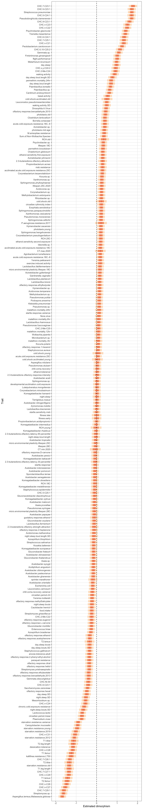
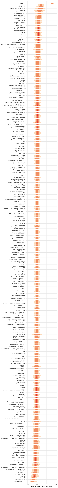
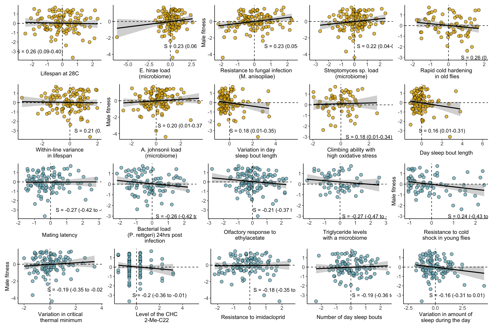
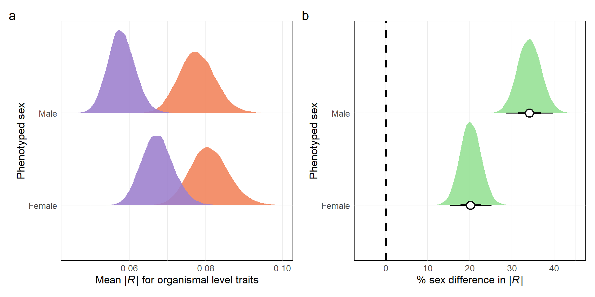
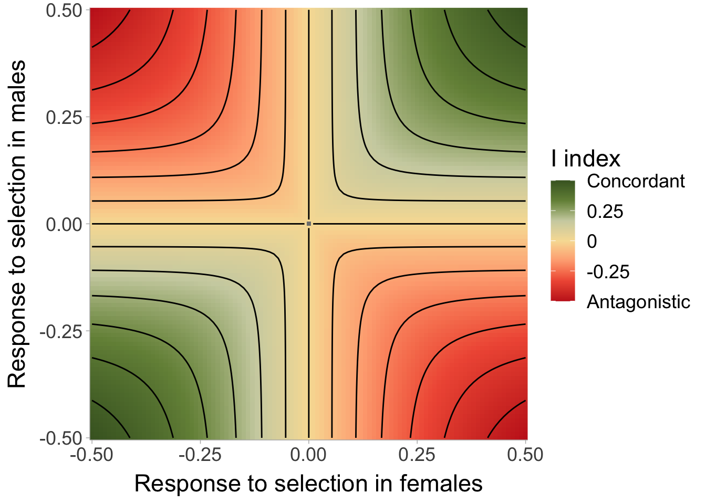
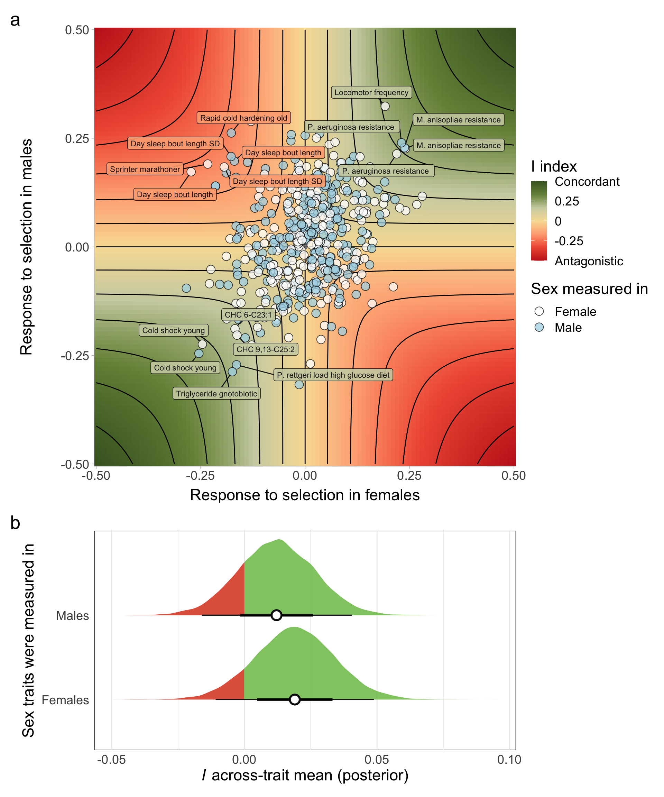

Last updated: 2023-03-03
Checks: 7 0
Knit directory: DGRP_sexual_conflict/
This reproducible R Markdown analysis was created with workflowr (version 1.7.0). The Checks tab describes the reproducibility checks that were applied when the results were created. The Past versions tab lists the development history.
Great! Since the R Markdown file has been committed to the Git repository, you know the exact version of the code that produced these results.
Great job! The global environment was empty. Objects defined in the global environment can affect the analysis in your R Markdown file in unknown ways. For reproduciblity it’s best to always run the code in an empty environment.
The command set.seed(20210706) was run prior to running
the code in the R Markdown file. Setting a seed ensures that any results
that rely on randomness, e.g. subsampling or permutations, are
reproducible.
Great job! Recording the operating system, R version, and package versions is critical for reproducibility.
Nice! There were no cached chunks for this analysis, so you can be confident that you successfully produced the results during this run.
Great job! Using relative paths to the files within your workflowr project makes it easier to run your code on other machines.
Great! You are using Git for version control. Tracking code development and connecting the code version to the results is critical for reproducibility.
The results in this page were generated with repository version 6577470. See the Past versions tab to see a history of the changes made to the R Markdown and HTML files.
Note that you need to be careful to ensure that all relevant files for
the analysis have been committed to Git prior to generating the results
(you can use wflow_publish or
wflow_git_commit). workflowr only checks the R Markdown
file, but you know if there are other scripts or data files that it
depends on. Below is the status of the Git repository when the results
were generated:
Ignored files:
Ignored: .DS_Store
Ignored: .Rapp.history
Ignored: .Rhistory
Ignored: .Rproj.user/
Ignored: analysis/.DS_Store
Untracked files:
Untracked: %
Untracked: -Toms-laptop.Rhistory
Untracked: Figure_1.pdf
Untracked: Figure_1.png
Untracked: Manuscript/
Untracked: PRIMSA.png
Untracked: PRISMA.png
Untracked: PRISMA.pptx
Untracked: Picture1.pdf
Untracked: Reported_heritability.xlsx
Untracked: Useful_cuts.Rmd
Untracked: data/RFF.csv
Untracked: data/RFM.csv
Untracked: data/RMF.csv
Untracked: data/RMM.csv
Untracked: data/all.dgrp.phenos_scaled.csv
Untracked: data/meta_data_for_all_traits.csv
Untracked: data/trait_names.rds
Untracked: fits/
Unstaged changes:
Modified: .Rprofile
Modified: .gitattributes
Modified: .gitignore
Modified: DGRP_sexual_conflict.Rproj
Modified: README.md
Modified: _workflowr.yml
Deleted: analysis/GCTA_results.Rmd
Deleted: analysis/Ideas.Rmd
Deleted: analysis/SNP_correlations.Rmd
Deleted: analysis/SNP_heritabilities.Rmd
Deleted: analysis/process_mashr.Rmd
Deleted: analysis/run_GWAS.Rmd
Deleted: analysis/run_mashr.Rmd
Deleted: code/README.md
Deleted: code/plink
Deleted: code/run_mashr.R
Modified: data/README.md
Deleted: data/S_male.csv
Modified: data/all.dgrp.phenos_unscaled.csv
Deleted: data/rfm.complete.csv
Modified: output/README.md
Note that any generated files, e.g. HTML, png, CSS, etc., are not included in this status report because it is ok for generated content to have uncommitted changes.
These are the previous versions of the repository in which changes were
made to the R Markdown (analysis/Main_analysis.Rmd) and
HTML (docs/Main_analysis.html) files. If you’ve configured
a remote Git repository (see ?wflow_git_remote), click on
the hyperlinks in the table below to view the files as they were in that
past version.
| File | Version | Author | Date | Message |
|---|---|---|---|---|
| Rmd | 6577470 | ausevo | 2023-03-03 | New version |
| Rmd | 7bb248d | ausevo | 2023-01-31 | rework of line means results |
| html | 6d630f0 | ausevo | 2022-05-12 | Build site. |
| Rmd | 95f4a97 | ausevo | 2022-05-12 | including ideas section |
| html | 7bf0ee0 | ausevo | 2022-05-10 | Build site. |
| Rmd | 5b9883e | ausevo | 2022-05-10 | Add GCTA model outputs |
| Rmd | 8e2d8be | tkeaney | 2021-08-17 | Merge branch ‘master’ of https://github.com/tomkeaney/DGRP_sexual_conflict |
| Rmd | 4b095f0 | tkeaney | 2021-08-17 | edits |
| Rmd | 73f011c | lukeholman | 2021-08-06 | Tiny edit (digits=3) |
| html | 043902f | tkeaney | 2021-07-28 | Build site. |
| Rmd | 959123f | tkeaney | 2021-07-28 | trying to fix a bug |
| html | 769e48d | tkeaney | 2021-07-28 | Build site. |
| Rmd | 340c41b | tkeaney | 2021-07-28 | sexual dimorphism calculation added |
| html | 4018580 | tkeaney | 2021-07-28 | Build site. |
| Rmd | 65b2597 | tkeaney | 2021-07-28 | sexual dimorphism calculation added |
| html | 83a0c4f | tkeaney | 2021-07-28 | Build site. |
| Rmd | ddea55e | tkeaney | 2021-07-28 | sexual dimorphism calculation added |
| html | b364d30 | tkeaney | 2021-07-23 | Build site. |
| Rmd | e404cf9 | tkeaney | 2021-07-23 | progression on selection calculations |
| html | 32f107f | tkeaney | 2021-07-23 | Build site. |
| Rmd | 6aad8a8 | tkeaney | 2021-07-23 | progression on selection calculations |
| html | 11a8390 | tkeaney | 2021-07-07 | Build site. |
| Rmd | 42b8f12 | tkeaney | 2021-07-07 | Get the site up and running |
First load the packages
library(tidyverse) # for tidy coding
library(RColorBrewer) # for custom colours
library(rcartocolor) # cool colours
library(kableExtra) # for scrolling tables
library(patchwork) # for cool plots
library(brms) # for bayesian models
library(tidybayes) # for more bayesian things
library(DT) # for interactive tables
library(broom) # convert results of functions into tables
library(ggtext) # for markdown features in ggplot
library(MetBrewer)
library(ggrepel)
library(ggnewscale)
DGRP_data <-
left_join(
read_csv("data/all.dgrp.phenos_scaled.csv") %>%
mutate(line = as.factor(line)),
read_csv("data/meta_data_for_all_traits.csv") %>%
group_by(Reference) %>%
mutate(study_ID = as.factor(cur_group_id()),
Pooled = if_else(Sex == "Pooled", "Yes", "No"))) %>%
left_join(read_rds("data/trait_names.rds"))We use data compiled in the DGRP database (Belonte, Keaney, et al. 2023).
First, we wrangle the data so that for each trait we have standardised line mean values for females and males, as well as fitness values for that line in females and males. We also include some helpful metadata for downstream analysis.
We then pruned the dataset to only include traits (with standardised values, where the mean = 0 and sd = 1) that have been measured in single-sex cohorts, in 80 or more lines. We also remove ‘intermediate’ traits between genotype and phenotype from three mass datasets on the microbiome and metabolome (Everett et al. 2020, Jin et al. 2020 and Zhou et al. 2020).
# Apply the selection criteria with the filter() function, then add a column each for female and male fitness
trait_data <-
DGRP_data %>% filter(!str_detect(Trait, "fitness"),
`# lines measured` >= 80 &
Pooled != "Yes" &
Reference != "Jin et al (2020) PLOS Genetics" &
Reference != "Everett et al (2020) Genome Research") %>%
left_join(
DGRP_data %>%
filter(str_detect(Trait, "fitness.early.life")) %>%
select(line, Trait, trait_value) %>%
pivot_wider(names_from = Trait, values_from = trait_value) %>%
rename(female_fitness = fitness.early.life.f, male_fitness = fitness.early.life.m))
clean_meta_data <-
trait_data %>%
select(Trait, Life_stage, `Trait guild`, study_ID, Trait_nice, Reference, `Trait description`) %>%
distinct(Trait, .keep_all = TRUE)\(~\)
Table S1. Traits and studies found during a literature search that considered studies published up until January 2022. The ‘included’ column indicates whether the trait was included in the analysis.
# how many studies did we start with?
table_data <- left_join(
DGRP_data %>%
distinct(Trait, .keep_all = TRUE) %>%
mutate(Measured_in = case_when(Sex == "Female" ~ "Females",
Sex == "Male" ~ "Males",
Sex == "Pooled" ~ "Mixed sex cohorts")) %>%
select(Trait_nice, Trait, Reference, `# lines measured`, Measured_in),
trait_data %>%
distinct(Trait) %>%
mutate(Included = "Yes")
) %>%
mutate(Included = if_else(is.na(Included), "No", Included)) %>%
select(-Trait) %>%
rename(Trait = Trait_nice, `Measured in` = Measured_in) %>%
arrange(desc(Included))
# Create a function to build HTML searchable tables
my_data_table <- function(df){
datatable(
df, rownames=FALSE,
autoHideNavigation = TRUE,
extensions = c("Scroller", "Buttons"),
options = list(
autoWidth = TRUE,
dom = 'Bfrtip',
deferRender=TRUE,
scrollX=TRUE, scrollY=1000,
scrollCollapse=TRUE,
buttons =
list('pageLength', 'colvis', 'csv', list(
extend = 'pdf',
pageSize = 'A4',
orientation = 'landscape',
filename = 'Trait_table')),
pageLength = 2115
)
)
}
my_data_table(table_data)\(~\)
Find the number of traits and studies included in our analysis.
# how many studies and traits do we have after filtering?
num_unique_traits <- table_data %>% filter(Included == "Yes") %>% nrow()
# in females
num_unique_traits_f <- table_data %>% filter(Included == "Yes" & `Measured in` == "Females") %>% nrow()
# in males
num_unique_traits_m <- table_data %>% filter(Included == "Yes" & `Measured in` == "Males") %>% nrow()
# how many studies are they measured across in total?
num_unique_studies <- table_data %>% filter(Included == "Yes") %>% distinct(Reference) %>% nrow()
# in females
num_unique_studies_f <- table_data %>% filter(Included == "Yes" & `Measured in` == "Females") %>% distinct(Reference) %>% nrow()
# in males
num_unique_studies_m <- table_data %>% filter(Included == "Yes" & `Measured in` == "Males") %>% distinct(Reference) %>% nrow()After this selection process, 475 remain, that were measured across 76 studies. There are 232 measured in females and 243 in males across 56 and 54 respectively.
\(~\)
\(~\)
We assume that line means approximate the breeding value for a trait for that given line, and that the variance across lines equals the genetic variance in the DGRP population for that trait.
We can then estimate the response to selection (\(R\)) for a trait using Robertson’s Secondary Theorem of Natural Selection (also known as the Robertson covariance; Robertson, 1968), which states that \(R\) is equivalent to the covariance between a traits breeding values (\(A_z\)) and the breeding values for relative fitness (\(A_w\)):
\[R = \sigma(A_w, Az)\] The secondary theorem typically does not partition \(R\) between the sexes. However, because we have \(A_w\) values in both sexes and often \(A_z\) values for each sex, we calculate four versions of \(R\):
For traits expressed in females:
\[R_{FF} = \sigma(A_w^F, A_z^F)\]
and
\[R_{MF} = \sigma(A_w^M, A_z^F)\] For traits expressed in males:
\[R_{MM} = \sigma(A_w^M, A_z^M)\]
and
\[R_{FM} = \sigma(A_w^F, A_z^M)\]
where the first subscripted letter indicates which sex breeding values for fitness were measured in.
\(R_{MF}\) and \(R_{FM}\) indicate the expected response when a trait is measured in one sex and fitness is measured in the other. We calculate these versions of \(R\) because a trait can respond to selection acting on the other sex even if it is not expressed, because the phenotype is a multivariate amalgamation of traits and genetic correlations between traits are likely abundant. For example, alleles encoding a female-specific CHC may also effect male desiccation resistance, which could be under selection in males.
\(~\)
Some description of the model structure here - take from paper
Build functions to run the models
# RFF estimates
female_traits <- trait_data %>% filter(Sex == "Female")
trait_list_female <- unique(female_traits$Trait) # an input to the map_dfr() function that we'll need in a few chunks time
# code the model structure we will use for all traits using one example - `flight.performance.f`. We can then use the update() function to run this model many times, once for each trait measured in females. update() makes this process many times faster, because the model can immediately start sampling, without the need to recompile.
RFF_model <-
brm(data = female_traits %>% filter(Trait == "flight.performance.f"),
family = gaussian,
bf(mvbind(female_fitness, trait_value) ~ 1) + set_rescor(TRUE),
prior = c(prior(normal(0, 0.1), class = Intercept, resp = femalefitness),
prior(normal(0, 0.1), class = Intercept, resp = traitvalue),
prior(normal(1, 0.1), class = sigma, resp = femalefitness),
prior(normal(1, 0.1), class = sigma, resp = traitvalue),
prior(lkj(2), class = rescor)),
chains = 4, cores = 4, iter = 6000, warmup = 2000,
seed = 1, file = "fits/RFF_test_model")
# make a function to update the model and the posterior sample output with the 'selected trait'
RFF_calculator <- function(selected_trait){
data <- female_traits %>% filter(Trait == selected_trait)
model <- update(
RFF_model, newdata = data,
chains = 4, cores = 4, iter = 6000, warmup = 2000,
seed = 1)
posterior <-
as_draws_df(model) %>%
rename(Response_to_selection_female = rescor__femalefitness__traitvalue) %>%
mutate(Trait = selected_trait) %>%
select(Trait, Response_to_selection_female) %>%
as_tibble()
posterior
}
# RMF estimates
RMF_model <-
brm(data = female_traits %>% filter(Trait == "flight.performance.f"),
family = gaussian,
bf(mvbind(male_fitness, trait_value) ~ 1) + set_rescor(TRUE),
prior = c(prior(normal(0, 0.1), class = Intercept, resp = malefitness),
prior(normal(0, 0.1), class = Intercept, resp = traitvalue),
prior(normal(1, 0.1), class = sigma, resp = malefitness),
prior(normal(1, 0.1), class = sigma, resp = traitvalue),
prior(lkj(2), class = rescor)),
chains = 4, cores = 4, iter = 6000, warmup = 2000,
seed = 1, file = "fits/RMF_test_model")
# make a function to update the model and the posterior sample output with your desired trait
RMF_calculator <- function(selected_trait){
data <- female_traits %>% filter(Trait == selected_trait)
model <- update(
RMF_model, newdata = data,
chains = 4, cores = 4, iter = 6000, warmup = 2000,
seed = 1)
posterior <-
as_draws_df(model) %>%
rename(Response_to_selection_male = rescor__malefitness__traitvalue) %>%
mutate(Trait = selected_trait) %>%
select(Trait, Response_to_selection_male) %>%
as_tibble()
posterior
}\(~\)
\(~\)
# RMM estimates
male_traits <- trait_data %>% filter(Sex == "Male")
trait_list_male <- unique(male_traits$Trait)
RMM_model <-
brm(data = male_traits %>% filter(Trait == "flight.performance.m"),
family = gaussian,
bf(mvbind(male_fitness, trait_value) ~ 1) + set_rescor(TRUE),
prior = c(prior(normal(0, 0.1), class = Intercept, resp = malefitness),
prior(normal(0, 0.1), class = Intercept, resp = traitvalue),
prior(normal(1, 0.1), class = sigma, resp = malefitness),
prior(normal(1, 0.1), class = sigma, resp = traitvalue),
prior(lkj(2), class = rescor)),
chains = 4, cores = 4, iter = 6000, warmup = 2000,
seed = 1, file = "fits/RMM_test_model")
# make a function to update the model and the posterior sample output with your desired trait
RMM_calculator <- function(selected_trait){
data <- male_traits %>% filter(Trait == selected_trait)
model <- update(
RMM_model, newdata = data,
chains = 4, cores = 4, iter = 6000, warmup = 2000,
seed = 1)
posterior <-
as_draws_df(model) %>%
rename(Response_to_selection_male = rescor__malefitness__traitvalue) %>%
mutate(Trait = selected_trait) %>%
select(Trait, Response_to_selection_male) %>%
as_tibble()
posterior
}
# RFM estimates
RFM_model <-
brm(data = male_traits %>% filter(Trait == "flight.performance.m"),
family = gaussian,
bf(mvbind(female_fitness, trait_value) ~ 1) + set_rescor(TRUE),
prior = c(prior(normal(0, 0.1), class = Intercept, resp = femalefitness),
prior(normal(0, 0.1), class = Intercept, resp = traitvalue),
prior(normal(1, 0.1), class = sigma, resp = femalefitness),
prior(normal(1, 0.1), class = sigma, resp = traitvalue),
prior(lkj(2), class = rescor)),
chains = 4, cores = 4, iter = 6000, warmup = 2000,
seed = 1, file = "fits/RFM_test_model")
# make a function to update the model and the posterior sample output with your desired trait
RFM_calculator <- function(selected_trait){
data <- male_traits %>% filter(Trait == selected_trait)
model <- update(
RFM_model, newdata = data,
chains = 4, cores = 4, iter = 6000, warmup = 2000,
seed = 1)
posterior <-
as_draws_df(model) %>%
rename(Response_to_selection_female = rescor__femalefitness__traitvalue) %>%
mutate(Trait = selected_trait) %>%
select(Trait, Response_to_selection_female) %>%
as_tibble()
posterior
}\(~\)
Correlation ~ Covariance
The brms model computes the posterior distribution of
the residual correlation between standardised trait and fitness breeding
values. Standardising traits to have standard deviation of 1 makes
correlation equal to covariance. For our own sanity, we plot the
residual correlation against covariance and show that, outside a small
amount of noise at the extremes, correlation ~ covariance. We calculated
point estimates of these variables for each trait measured in females
using the cor and cov functions.
cor_cov_calculator <- function(selected_trait){
data <- trait_data %>% filter(Trait == selected_trait,
!is.na(female_fitness),
!is.na(trait_value))
output <-
bind_cols(
cor(data$female_fitness, data$trait_value) %>%
as_tibble() %>%
rename(cor = value),
cov(data$female_fitness, data$trait_value) %>%
as_tibble() %>%
rename(cov = value)) %>%
mutate(Trait = selected_trait)
output
}
cor_cov <- map_dfr(trait_list_female, cor_cov_calculator)
cor_cov %>%
ggplot(aes(cor, cov)) +
geom_point(size = 2) +
labs(x = "Trait correlation with fitness", y = "Trait covariance with fitness") +
theme_bw() +
theme(text = element_text(size = 14))
\(~\)
Run the models using RFF_calculator,
RMF_calculator, RMM_calculator and
RFM_calculator
# run the RFF function
Run_function <- FALSE # Change this to TRUE to run the models
if(Run_function){
RFF <- map_dfr(trait_list_female, RFF_calculator) # map_dfr returns a data frame created by row-binding each output
write_csv(RFF, file = "data/RFF.csv")
} else RFF <- read_csv("data/RFF.csv")
# run the RMF function
if(Run_function){
RMF <- map_dfr(trait_list_female, RMF_calculator)
write_csv(RMF, file = "data/RMF.csv")
} else RMF <- read_csv("data/RMF.csv")
# run the RMM function
if(Run_function){
RMM <- map_dfr(trait_list_male, RMM_calculator)
write_csv(RMM, file = "data/RMM.csv")
} else RMM <- read_csv("data/RMM.csv")
# run the RFM function
if(Run_function){
RFM <- map_dfr(trait_list_male, RFM_calculator)
write_csv(RFM, file = "data/RFM.csv")
} else RFM <- read_csv("data/RFM.csv")\(~\)
\(~\)
Combine the data frames and estimate the overall expected response to selection as
\[R_{overall}^F = \frac{R_{FF} + R_{MF}}{2}\] and
\[R_{overall}^M = \frac{R_{MM} + R_{FM}}{2}\]
In the same code chunk, we also calculate the difference between the sexes for the response to selection in each trait as
\[\Delta R^F = R_{FF} - R_{MF}\] and
\[\Delta R^M = R_{FM} - R_{MM}\]
to test for the weak form of intralocus sexual conflict, as per Bonduriansky and Chenoweth (2009). Note that this measure does not reveal whether a trait is truly sexually antagonistic, as a difference is possible when a selection response is sexually concordant but with sex differences in strength. A difference can also result from the absence of a response in one sex and a strong response in the other.
R_female_traits <-
bind_cols(RFF, RMF) %>%
filter(Trait...1 == Trait...3) %>%
rename(Trait = Trait...1) %>%
mutate(Trait_Sex = "Female",
R_overall = (Response_to_selection_female + Response_to_selection_male)/2,
R_diff = Response_to_selection_female - Response_to_selection_male) %>%
select(Trait, Trait_Sex, everything(), -(Trait...3))
R_male_traits <-
bind_cols(RFM, RMM) %>%
rename(Trait = Trait...1) %>%
mutate(Trait_Sex = "Male",
R_overall = (Response_to_selection_female + Response_to_selection_male)/2,
R_diff = Response_to_selection_female - Response_to_selection_male) %>%
select(Trait, Trait_Sex, everything(), -(Trait...3))
R_all_traits <- bind_rows(R_female_traits, R_male_traits)
R_long_form <-
R_all_traits %>%
select(1:4) %>%
pivot_longer(cols = 3:4, names_to = "Fitness_Sex", values_to = "R") %>%
mutate(Fitness_Sex = case_when(Fitness_Sex == "Response_to_selection_female" ~ "Female",
Fitness_Sex == "Response_to_selection_male" ~ "Male"))\(~\)
\(~\)
p1 <-
R_female_traits %>%
group_by(Trait) %>%
mutate(avg_R = median(Response_to_selection_female)) %>%
ggplot(aes(Response_to_selection_female, fct_reorder(Trait, avg_R))) +
stat_interval(.width = c(0.05, 0.66, 0.95),
height = 1, show.legend = F) +
rcartocolor::scale_color_carto_d(palette = "Purp") +
coord_cartesian(xlim = c(-0.5, 0.5)) +
geom_vline(linetype = 2, xintercept = 0, linewidth = 1) +
labs(x = "Response to selection in females",
y = "Trait expressed in females") +
theme_bw() +
theme(legend.position = "none",
panel.grid.minor = element_blank(),
text = element_text(size=14),
axis.text.y = element_text(size = 8))
p2 <-
R_female_traits %>%
group_by(Trait) %>%
mutate(avg_R = median(Response_to_selection_male)) %>%
ggplot(aes(Response_to_selection_male, fct_reorder(Trait, avg_R))) +
stat_interval(.width = c(0.05, 0.66, 0.95),
height = 1, show.legend = F) +
rcartocolor::scale_color_carto_d(palette = "Peach") +
coord_cartesian(xlim = c(-0.5, 0.5)) +
geom_vline(linetype = 2, xintercept = 0, linewidth = 1) +
labs(x = "Response to selection in males",
y = "Trait expressed in females") +
theme_bw() +
theme(legend.position = "none",
panel.grid.minor = element_blank(),
text = element_text(size=14),
axis.text.y = element_text(size = 8))
p1 + p2 +
plot_annotation(tag_levels = 'a')
Figure S1. The estimated response to selection in a females and b males for all traits measured in females. Innermost bands approximate the median, while outer bands show the 66 and 95% credible intervals.
\(~\)
p3 <-
R_male_traits %>%
group_by(Trait) %>%
mutate(avg_R = median(Response_to_selection_male)) %>%
ggplot(aes(Response_to_selection_male, fct_reorder(Trait, avg_R))) +
stat_interval(.width = c(0.05, 0.66, 0.95),
height = 1, show.legend = F) +
rcartocolor::scale_color_carto_d(palette = "Peach") +
coord_cartesian(xlim = c(-0.5, 0.5)) +
geom_vline(linetype = 2, xintercept = 0, linewidth = 1) +
labs(x = "Response to selection in males",
y = "Trait expressed in males") +
theme_bw() +
theme(legend.position = "none",
panel.grid.minor = element_blank(),
text = element_text(size=14),
axis.text.y = element_text(size = 8))
p4 <-
R_male_traits %>%
group_by(Trait) %>%
mutate(avg_R = median(Response_to_selection_female)) %>%
ggplot(aes(Response_to_selection_female, fct_reorder(Trait, avg_R))) +
stat_interval(.width = c(0.05, 0.66, 0.95),
height = 1, show.legend = F) +
rcartocolor::scale_color_carto_d(palette = "Purp") +
coord_cartesian(xlim = c(-0.5, 0.5)) +
geom_vline(linetype = 2, xintercept = 0, linewidth = 1) +
labs(x = "Response to selection in females",
y = "Trait expressed in males") +
theme_bw() +
theme(legend.position = "none",
panel.grid.minor = element_blank(),
text = element_text(size=14),
axis.text.y = element_text(size = 8))
p3 + p4 +
plot_annotation(tag_levels = 'a')
| Version | Author | Date |
|---|---|---|
| 7bf0ee0 | ausevo | 2022-05-10 |
Figure S2. The response to selection in a males and b females for all traits measured in males. Innermost bands approximate the median, while outer bands show the 66 and 95% credible intervals.
\(~\)
Choose the top 20 traits measured in females in terms of absolute \(R_{FF}\) and \(R_{MF}\) and present them in a Table
Table 1. The traits in measured in females with the strongest responses to selection in the DGRP. The sign of \(R\) indicates the direction of the response, with positive expected responses bolded. Estimated error is the standard deviation of the posterior distribution. The notable column indicates that the 95% CI does not overlap zero.
R_summary_female <-
bind_cols(
R_female_traits %>%
select(Trait, Response_to_selection_female) %>%
group_by(Trait) %>%
summarise_draws("median", "sd", ~quantile(.x, probs = c(0.025, 0.975), na.rm = TRUE), .cores = 4) %>%
ungroup() %>%
left_join(trait_data %>% distinct(Trait, Trait_nice)) %>% # add the nice names
rename(`R in females` = median, `Estimated error` = sd,
`2.5% CI` = `2.5%`, `97.5% CI` = `97.5%`, `Trait in females` = Trait_nice) %>%
mutate(R_abs = abs(`R in females`)) %>%
arrange(-R_abs) %>%
mutate(across(3:6, ~ round(.x, digits = 3)),
Notable = case_when(`2.5% CI` < 0 & `97.5% CI` < 0 ~ "*",
`2.5% CI` > 0 & `97.5% CI` > 0 ~ "*",
TRUE ~ " ")) %>%
filter(Notable == "*") %>%
select(`Trait in females`, `R in females`, `Estimated error`, `2.5% CI`, `97.5% CI`, Notable) %>%
# the next lines add empty rows and remove the NA values in them. We do this so we bind the two dataframes
add_row() %>%
add_row() %>%
add_row() %>%
mutate_all(~replace(., is.na(.), "")),
R_female_traits %>%
select(Trait, Response_to_selection_male) %>%
group_by(Trait) %>%
summarise_draws("median", "sd", ~quantile(.x, probs = c(0.025, 0.975), na.rm = TRUE), .cores = 4) %>%
ungroup() %>%
left_join(trait_data %>% distinct(Trait, Trait_nice)) %>% # add the nice names
rename(`R in males` = median, `Estimated error ` = sd,
`2.5% CI ` = `2.5%`, `97.5% CI ` = `97.5%`, `Trait in females ` = Trait_nice) %>%
mutate(R_abs = abs(`R in males`)) %>%
arrange(-R_abs) %>%
mutate(across(3:6, ~ round(.x, digits = 3)),
`Notable ` = case_when(`2.5% CI ` < 0 & `97.5% CI ` < 0 ~ "*",
`2.5% CI ` > 0 & `97.5% CI ` > 0 ~ "*",
TRUE ~ " ")) %>%
filter(`Notable ` == "*") %>%
select(`Trait in females `, `R in males`, `Estimated error `, `2.5% CI `, `97.5% CI `, `Notable `)
)
kbl(R_summary_female) %>%
kable_minimal(font_size = 12) %>%
column_spec(1,
bold = if_else(R_summary_female$`R in females` > 0, TRUE, FALSE),
width = "22em") %>%
column_spec(7,
bold = if_else(R_summary_female$`R in males` > 0, TRUE, FALSE),
width = "24em") | Trait in females | R in females | Estimated error | 2.5% CI | 97.5% CI | Notable | Trait in females | R in males | Estimated error | 2.5% CI | 97.5% CI | Notable |
|---|---|---|---|---|---|---|---|---|---|---|---|
| Lifetime fecundity 25C | 0.28 | 0.088 | 0.097 | 0.438 |
|
Locomotor frequency | 0.324 | 0.113 | 0.075 | 0.517 |
|
| Day sleep bout length | -0.273 | 0.091 | -0.435 | -0.084 |
|
Critical thermal max | 0.289 | 0.109 | 0.061 | 0.482 |
|
| Week1 fecundity 25C | 0.267 | 0.087 | 0.087 | 0.427 |
|
CHC 6,10-C26:2 | -0.269 | 0.085 | -0.422 | -0.092 |
|
| Cold shock young | -0.246 | 0.114 | -0.453 | -0.005 |
|
Paraquat resistance | 0.251 | 0.112 | 0.013 | 0.451 |
|
| Circadian period mesa | 0.241 | 0.099 | 0.037 | 0.42 |
|
Climbing ability paraquat | 0.241 | 0.112 | 0.008 | 0.442 |
|
| M. anisopliae resistance | 0.24 | 0.086 | 0.064 | 0.399 |
|
CHC n-C26 | 0.236 | 0.086 | 0.060 | 0.394 |
|
| Sprinter marathoner | -0.233 | 0.1 | -0.417 | -0.025 |
|
M. anisopliae resistance | 0.226 | 0.084 | 0.054 | 0.381 |
|
| CHC 8-C25:1 | -0.229 | 0.091 | -0.392 | -0.041 |
|
CHC 5,9-C25:2 & 9-C25:1 | -0.213 | 0.088 | -0.377 | -0.035 |
|
| Week3 fecundity 25C | 0.226 | 0.088 | 0.048 | 0.391 |
|
CHC 8,12-C26:2 | -0.209 | 0.091 | -0.379 | -0.020 |
|
| Waking activity | -0.226 | 0.094 | -0.398 | -0.03 |
|
Phototaxis mid age | 0.207 | 0.086 | 0.034 | 0.365 |
|
| 2 3-butanedione olfactory response intensity | 0.211 | 0.096 | 0.013 | 0.39 |
|
CHC 9,13-C25:2 | -0.203 | 0.092 | -0.374 | -0.017 |
|
| Day sleep bout length SD | -0.194 | 0.092 | -0.365 | -0.005 |
|
Startle response | 0.194 | 0.086 | 0.021 | 0.354 |
|
| CHC 7-C27:1 | 0.192 | 0.089 | 0.01 | 0.358 |
|
Micro environmental plasticity lifespan 25C | 0.191 | 0.085 | 0.019 | 0.351 |
|
| Thorax length thermal plasticity | -0.189 | 0.092 | -0.358 | -0.001 |
|
Ovariole number | 0.191 | 0.086 | 0.017 | 0.350 |
|
| CHC NI 33 | 0.188 | 0.092 | 0.002 | 0.36 |
|
CHC 6-C23:1 | -0.189 | 0.090 | -0.355 | -0.006 |
|
| Starvation resistance variance | -0.18 | 0.086 | -0.339 | -0.003 |
|
CHC n-C29 | 0.185 | 0.090 | 0.001 | 0.350 |
|
| Negative geotaxis msb | 0.184 | 0.087 | 0.011 | 0.348 |
|
||||||
| Day sleep bout length SD | 0.184 | 0.090 | 0.002 | 0.349 |
|
||||||
| CHC n-C28 | 0.182 | 0.088 | 0.004 | 0.349 |
|
\(~\)
Table 2. The traits in measured in males with the strongest responses to selection in the DGRP. The sign of \(R\) indicates the direction of the response, with positive expected responses bolded. Estimated error is the standard deviation of the posterior distribution. The notable column indicates that the 95% CI does not overlap zero.
R_summary_male <-
bind_cols(
R_male_traits %>%
select(Trait, Response_to_selection_female) %>%
group_by(Trait) %>%
summarise_draws("median", "sd", ~quantile(.x, probs = c(0.025, 0.975), na.rm = TRUE), .cores = 4) %>%
ungroup() %>%
left_join(trait_data %>% distinct(Trait, Trait_nice)) %>% # add the nice names
rename(`R in females` = median, `Estimated error` = sd,
`2.5% CI` = `2.5%`, `97.5% CI` = `97.5%`, `Trait in males` = Trait_nice) %>%
mutate(R_abs = abs(`R in females`)) %>%
arrange(-R_abs) %>%
mutate(across(3:6, ~ round(.x, digits = 3)),
Notable = case_when(`2.5% CI` < 0 & `97.5% CI` < 0 ~ "*",
`2.5% CI` > 0 & `97.5% CI` > 0 ~ "*",
TRUE ~ " ")) %>%
filter(Notable == "*") %>%
select(`Trait in males`, `R in females`, `Estimated error`, `2.5% CI`, `97.5% CI`, Notable) %>%
# the next lines add empty rows and remove the NA values in them. We do this so we bind the two dataframes
add_row() %>%
add_row() %>%
add_row() %>%
add_row() %>%
add_row() %>%
add_row() %>%
add_row() %>%
add_row() %>%
add_row() %>%
add_row() %>%
add_row() %>%
add_row() %>%
mutate_all(~replace(., is.na(.), "")),
R_male_traits %>%
select(Trait, Response_to_selection_male) %>%
group_by(Trait) %>%
summarise_draws("median", "sd", ~quantile(.x, probs = c(0.025, 0.975), na.rm = TRUE), .cores = 4) %>%
ungroup() %>%
left_join(trait_data %>% distinct(Trait, Trait_nice)) %>% # add the nice names
rename(`R in males` = median, `Estimated error ` = sd,
`2.5% CI ` = `2.5%`, `97.5% CI ` = `97.5%`, `Trait in males ` = Trait_nice) %>%
mutate(R_abs = abs(`R in males`)) %>%
arrange(-R_abs) %>%
mutate(across(3:6, ~ round(.x, digits = 3)),
`Notable ` = case_when(`2.5% CI ` < 0 & `97.5% CI ` < 0 ~ "*",
`2.5% CI ` > 0 & `97.5% CI ` > 0 ~ "*",
TRUE ~ " ")) %>%
filter(`Notable ` == "*") %>%
select(`Trait in males `, `R in males`, `Estimated error `, `2.5% CI `, `97.5% CI `, `Notable `)
)
kbl(R_summary_male) %>%
kable_minimal(font_size = 12) %>%
column_spec(1,
bold = if_else(R_summary_male$`R in females` > 0, TRUE, FALSE),
width = "22em") %>%
column_spec(7,
bold = if_else(R_summary_male$`R in males` > 0, TRUE, FALSE),
width = "28em") | Trait in males | R in females | Estimated error | 2.5% CI | 97.5% CI | Notable | Trait in males | R in males | Estimated error | 2.5% CI | 97.5% CI | Notable |
|---|---|---|---|---|---|---|---|---|---|---|---|
| Protein gnotobiotic | -0.284 | 0.126 | -0.502 | -0.014 |
|
Mating latency | -0.317 | 0.084 | -0.470 | -0.144 |
|
| Cold shock young | -0.254 | 0.111 | -0.455 | -0.022 |
|
Triglyceride gnotobiotic | -0.288 | 0.118 | -0.496 | -0.033 |
|
| M. anisopliae resistance | 0.238 | 0.088 | 0.059 | 0.4 |
|
P. rettgeri load high glucose diet | -0.272 | 0.090 | -0.438 | -0.085 |
|
| Circadian period mesa | 0.215 | 0.095 | 0.02 | 0.393 |
|
Rapid cold hardening old | 0.262 | 0.108 | 0.036 | 0.453 |
|
| Flight performance | 0.191 | 0.085 | 0.019 | 0.35 |
|
Climbing ability paraquat | 0.261 | 0.113 | 0.023 | 0.462 |
|
| Starvation resistance high protein diet | 0.179 | 0.086 | 0.003 | 0.342 |
|
Lifespan 28C | 0.258 | 0.085 | 0.083 | 0.415 |
|
| Cold shock young | -0.245 | 0.107 | -0.438 | -0.022 |
|
||||||
| M. anisopliae resistance | 0.228 | 0.087 | 0.047 | 0.388 |
|
||||||
| Olfactory response ethylacetate | -0.209 | 0.085 | -0.367 | -0.033 |
|
||||||
| Glucose low glucose diet | 0.208 | 0.096 | 0.009 | 0.384 |
|
||||||
| Day sleep bout length SD | 0.208 | 0.091 | 0.019 | 0.376 |
|
||||||
| Micro environmental plasticity lifespan 25C | 0.202 | 0.084 | 0.030 | 0.357 |
|
||||||
| CHC 2-Me-C22 | -0.198 | 0.094 | -0.373 | -0.008 |
|
||||||
| Day sleep bout length | 0.197 | 0.092 | 0.010 | 0.366 |
|
||||||
| Critical thermal min within environment variation plasticity | -0.194 | 0.090 | -0.362 | -0.012 |
|
||||||
| Activity MPH | 0.193 | 0.088 | 0.012 | 0.356 |
|
||||||
| Locomotor activity | 0.181 | 0.086 | 0.008 | 0.341 |
|
||||||
| Acclimated acute cold exposure resistance 25C | 0.181 | 0.087 | 0.005 | 0.345 |
|
Table S2. The traits with the strongest overall responses to selection in the DGRP (out of 232 in females and 243 in males). The sign of \(R\) indicates the direction of the response, with positive expected responses bolded. Estimated error is the standard deviation of the posterior distribution. The notable column indicates whether the 95% CI overlaps with zero.
R_total_summary <-
bind_rows(
left_join(
R_female_traits %>%
select(Trait, R_overall) %>%
group_by(Trait) %>%
summarise_draws("median", "sd", ~quantile(.x, probs = c(0.025, 0.975), na.rm = TRUE), .cores = 4) %>%
ungroup() %>%
left_join(trait_data %>% distinct(Trait, Trait_nice)) %>% # add the nice names
rename(`R overall` = median, `Estimated error` = sd,
`2.5% CI` = `2.5%`, `97.5% CI` = `97.5%`) %>%
mutate(R_abs = abs(`R overall`)) %>%
arrange(-R_abs) %>%
mutate(across(3:6, ~ round(.x, digits = 3)),
Notable = case_when(`2.5% CI` < 0 & `97.5% CI` < 0 ~ "*",
`2.5% CI` > 0 & `97.5% CI` > 0 ~ "*",
TRUE ~ " ")) %>%
filter(Notable == "*"),
R_female_traits %>%
select(Trait, Response_to_selection_female, Response_to_selection_male) %>%
group_by(Trait) %>%
summarise(`R in females` = round(median(Response_to_selection_female), 3),
`R in males` = round(median(Response_to_selection_male), 3)) %>%
ungroup()
) %>%
select(Trait_nice, `R in females`, `R in males`, `R overall`, `Estimated error`, `2.5% CI`, `97.5% CI`, Notable) %>%
rename(Trait = Trait_nice),
left_join(
R_male_traits %>%
select(Trait, R_overall) %>%
group_by(Trait) %>%
summarise_draws("median", "sd", ~quantile(.x, probs = c(0.025, 0.975), na.rm = TRUE), .cores = 4) %>%
ungroup() %>%
left_join(trait_data %>% distinct(Trait, Trait_nice)) %>% # add the nice names
rename(`R overall` = median, `Estimated error` = sd,
`2.5% CI` = `2.5%`, `97.5% CI` = `97.5%`) %>%
mutate(R_abs = abs(`R overall`)) %>%
arrange(-R_abs) %>%
mutate(across(3:6, ~ round(.x, digits = 3)),
Notable = case_when(`2.5% CI` < 0 & `97.5% CI` < 0 ~ "*",
`2.5% CI` > 0 & `97.5% CI` > 0 ~ "*",
TRUE ~ " ")) %>%
filter(Notable == "*"),
R_male_traits %>%
select(Trait, Response_to_selection_female, Response_to_selection_male) %>%
group_by(Trait) %>%
summarise(`R in females` = round(median(Response_to_selection_female), 3),
`R in males` = round(median(Response_to_selection_male), 3)) %>%
ungroup()
) %>%
select(Trait_nice, `R in females`, `R in males`, `R overall`, `Estimated error`, `2.5% CI`, `97.5% CI`, Notable) %>%
rename(Trait = Trait_nice)
)
kbl(R_total_summary) %>%
kable_minimal(full_width = F, font_size = 12) %>%
column_spec(1,
bold = if_else(R_total_summary$`R overall` > 0, TRUE, FALSE),
width = "21em")%>%
pack_rows("Traits measured in females", 1, 31, hline_after = TRUE, italic = TRUE) %>%
pack_rows("Traits measured in males", 32, 52, hline_after = TRUE, italic = TRUE)| Trait | R in females | R in males | R overall | Estimated error | 2.5% CI | 97.5% CI | Notable |
|---|---|---|---|---|---|---|---|
| Traits measured in females | |||||||
| Locomotor frequency | 0.192 | 0.324 | 0.254 | 0.088 | 0.071 | 0.413 |
|
| Cold shock young | -0.246 | -0.224 | -0.233 | 0.080 | -0.382 | -0.067 |
|
| M. anisopliae resistance | 0.240 | 0.226 | 0.232 | 0.060 | 0.109 | 0.348 |
|
| P. aeruginosa resistance | 0.219 | 0.214 | 0.214 | 0.092 | 0.027 | 0.384 |
|
| Lifetime fecundity 25C | 0.280 | 0.116 | 0.197 | 0.063 | 0.068 | 0.316 |
|
| CHC 9,13-C25:2 | -0.163 | -0.203 | -0.182 | 0.066 | -0.309 | -0.048 |
|
| Week1 fecundity 25C | 0.267 | 0.097 | 0.182 | 0.062 | 0.058 | 0.301 |
|
| CHC 6-C23:1 | -0.168 | -0.189 | -0.177 | 0.065 | -0.300 | -0.048 |
|
| Cold shock old | -0.128 | -0.226 | -0.176 | 0.083 | -0.331 | -0.007 |
|
| Waking activity SD | -0.188 | -0.166 | -0.175 | 0.072 | -0.313 | -0.033 |
|
| Negative geotaxis msb | 0.156 | 0.184 | 0.169 | 0.063 | 0.043 | 0.288 |
|
| Phototaxis mid age | 0.131 | 0.207 | 0.168 | 0.062 | 0.044 | 0.286 |
|
| Circadian period mesa | 0.241 | 0.083 | 0.161 | 0.071 | 0.016 | 0.297 |
|
| Week3 fecundity 25C | 0.226 | 0.090 | 0.157 | 0.063 | 0.033 | 0.277 |
|
| CHC 8-C25:1 | -0.229 | -0.085 | -0.156 | 0.065 | -0.280 | -0.024 |
|
| Fecundity | 0.190 | 0.114 | 0.151 | 0.067 | 0.017 | 0.280 |
|
| CHC 2-Me-C24 | -0.114 | -0.185 | -0.148 | 0.068 | -0.279 | -0.011 |
|
| CHC n-C21 | -0.165 | -0.130 | -0.148 | 0.066 | -0.272 | -0.015 |
|
| CHC x-C23:1 | -0.136 | -0.159 | -0.146 | 0.065 | -0.273 | -0.015 |
|
| CHC n-C26 | 0.058 | 0.236 | 0.145 | 0.063 | 0.021 | 0.267 |
|
| CHC NI 33 | 0.188 | 0.099 | 0.143 | 0.065 | 0.012 | 0.265 |
|
| Startle response msb | 0.137 | 0.148 | 0.142 | 0.062 | 0.016 | 0.261 |
|
| CHC n-C23 | -0.153 | -0.129 | -0.141 | 0.065 | -0.263 | -0.009 |
|
| Abdomen length 28C | 0.126 | 0.156 | 0.141 | 0.063 | 0.014 | 0.261 |
|
| Startle response | 0.087 | 0.194 | 0.140 | 0.062 | 0.015 | 0.260 |
|
| CHC NI 34 | 0.130 | 0.152 | 0.139 | 0.063 | 0.015 | 0.259 |
|
| Waking activity | -0.226 | -0.052 | -0.138 | 0.067 | -0.265 | -0.003 |
|
| CHC 7-C27:1 | 0.192 | 0.078 | 0.134 | 0.063 | 0.008 | 0.255 |
|
| Dessication tolerance | 0.166 | 0.104 | 0.134 | 0.064 | 0.009 | 0.257 |
|
| Boric acid resistance | 0.137 | 0.121 | 0.130 | 0.064 | 0.002 | 0.252 |
|
| CHC 6,10-C26:2 | 0.013 | -0.269 | -0.128 | 0.063 | -0.248 | -0.003 |
|
| Traits measured in males | |||||||
| Cold shock young | -0.254 | -0.245 | -0.247 | 0.078 | -0.393 | -0.089 |
|
| P. aeruginosa resistance | 0.231 | 0.240 | 0.233 | 0.087 | 0.051 | 0.395 |
|
| M. anisopliae resistance | 0.238 | 0.228 | 0.232 | 0.062 | 0.106 | 0.347 |
|
| Triglyceride gnotobiotic | -0.174 | -0.288 | -0.229 | 0.091 | -0.397 | -0.037 |
|
| P. rettgeri load high glucose diet | -0.164 | -0.272 | -0.216 | 0.069 | -0.345 | -0.077 |
|
| Protein gnotobiotic | -0.284 | -0.095 | -0.188 | 0.086 | -0.349 | -0.011 |
|
| Olfactory response ethylacetate | -0.143 | -0.209 | -0.175 | 0.061 | -0.291 | -0.051 |
|
| Flight performance | 0.191 | 0.150 | 0.169 | 0.061 | 0.048 | 0.285 |
|
| Mating latency | -0.014 | -0.317 | -0.165 | 0.065 | -0.290 | -0.036 |
|
| Day sleep SD | -0.159 | -0.167 | -0.162 | 0.064 | -0.284 | -0.035 |
|
| Glucose low glucose diet | 0.117 | 0.208 | 0.162 | 0.071 | 0.016 | 0.297 |
|
| Circadian period mesa | 0.215 | 0.109 | 0.160 | 0.068 | 0.025 | 0.289 |
|
| Parathion resistance | 0.174 | 0.132 | 0.153 | 0.063 | 0.026 | 0.272 |
|
| Circadian period chi | 0.194 | 0.113 | 0.153 | 0.072 | 0.006 | 0.290 |
|
| CHC 2-Me-C22 | -0.107 | -0.198 | -0.151 | 0.068 | -0.280 | -0.016 |
|
| Activity | 0.107 | 0.175 | 0.141 | 0.063 | 0.013 | 0.261 |
|
| Activity MPH | 0.085 | 0.193 | 0.139 | 0.063 | 0.010 | 0.262 |
|
| Night sleep SD | -0.116 | -0.162 | -0.139 | 0.066 | -0.265 | -0.005 |
|
| Startle response msb | 0.086 | 0.174 | 0.130 | 0.063 | 0.002 | 0.249 |
|
| Negative geotaxis msb | 0.099 | 0.159 | 0.129 | 0.064 | 0.002 | 0.253 |
|
| Starvation resistance high protein diet | 0.179 | 0.074 | 0.126 | 0.062 | 0.002 | 0.244 |
|
\(~\)
Table 3. The traits with the largest \(\Delta R\) between the sexes in the DGRP. Traits where \(R_F > R_M\) are indicated in bold. Estimated error is the standard deviation of the posterior distribution. The notable column indicates whether the 95% CI overlaps with zero.
R_diff_summary <-
bind_rows(
left_join(
R_female_traits %>%
select(Trait, R_diff) %>%
group_by(Trait) %>%
summarise_draws("median", "sd", ~quantile(.x, probs = c(0.025, 0.975), na.rm = TRUE), .cores = 4) %>%
ungroup() %>%
left_join(trait_data %>% distinct(Trait, Trait_nice)) %>% # add the nice names
rename(`Female R - Male R` = median, `Estimated error` = sd,
`2.5% CI` = `2.5%`, `97.5% CI` = `97.5%`) %>%
mutate(R_abs = abs(`Female R - Male R`)) %>%
arrange(-R_abs) %>%
mutate(across(3:6, ~ round(.x, digits = 3)),
Notable = case_when(`2.5% CI` < 0 & `97.5% CI` < 0 ~ "*",
`2.5% CI` > 0 & `97.5% CI` > 0 ~ "*",
TRUE ~ " ")) %>%
filter(Notable == "*"),
R_female_traits %>%
select(Trait, Response_to_selection_female, Response_to_selection_male) %>%
group_by(Trait) %>%
summarise(`R in females` = round(median(Response_to_selection_female), 3),
`R in males` = round(median(Response_to_selection_male), 3)) %>%
ungroup()
) %>%
select(Trait_nice, `R in females`, `R in males`, `Female R - Male R`, `Estimated error`, `2.5% CI`, `97.5% CI`, Notable) %>%
rename(Trait = Trait_nice),
left_join(
R_male_traits %>%
select(Trait, R_diff) %>%
group_by(Trait) %>%
summarise_draws("median", "sd", ~quantile(.x, probs = c(0.025, 0.975), na.rm = TRUE), .cores = 4) %>%
ungroup() %>%
left_join(trait_data %>% distinct(Trait, Trait_nice)) %>% # add the nice names
rename(`Female R - Male R` = median, `Estimated error` = sd,
`2.5% CI` = `2.5%`, `97.5% CI` = `97.5%`) %>%
mutate(R_abs = abs(`Female R - Male R`)) %>%
arrange(-R_abs) %>%
mutate(across(3:6, ~ round(.x, digits = 3)),
Notable = case_when(`2.5% CI` < 0 & `97.5% CI` < 0 ~ "*",
`2.5% CI` > 0 & `97.5% CI` > 0 ~ "*",
TRUE ~ " ")) %>%
filter(Notable == "*"),
R_male_traits %>%
select(Trait, Response_to_selection_female, Response_to_selection_male) %>%
group_by(Trait) %>%
summarise(`R in females` = round(median(Response_to_selection_female), 3),
`R in males` = round(median(Response_to_selection_male), 3)) %>%
ungroup()
) %>%
select(Trait_nice, `R in females`, `R in males`, `Female R - Male R`, `Estimated error`, `2.5% CI`, `97.5% CI`, Notable) %>%
rename(Trait = Trait_nice)
)
kbl(R_diff_summary) %>%
kable_minimal(full_width = F, font_size = 12) %>%
column_spec(1,
bold = if_else(R_diff_summary$`Female R - Male R` > 0, TRUE, FALSE),
width = "21em") %>%
pack_rows("Traits measured in females", 1, 8, hline_after = TRUE, italic = TRUE) %>%
pack_rows("Traits measured in males", 9, 19, hline_after = TRUE, italic = TRUE)| Trait | R in females | R in males | Female R - Male R | Estimated error | 2.5% CI | 97.5% CI | Notable |
|---|---|---|---|---|---|---|---|
| Traits measured in females | |||||||
| Day sleep bout length | -0.273 | 0.173 | -0.442 | 0.129 | -0.683 | -0.178 |
|
| Sprinter marathoner | -0.233 | 0.191 | -0.422 | 0.142 | -0.687 | -0.133 |
|
| Critical thermal max | -0.129 | 0.289 | -0.415 | 0.160 | -0.711 | -0.084 |
|
| Day sleep bout length SD | -0.194 | 0.184 | -0.376 | 0.129 | -0.619 | -0.119 |
|
| 2 3-butanedione olfactory response intensity | 0.211 | -0.092 | 0.301 | 0.136 | 0.023 | 0.561 |
|
| 2 3-butanedione olfactory latency 30 percentile | 0.160 | -0.130 | 0.288 | 0.136 | 0.015 | 0.549 |
|
| CHC 6,10-C26:2 | 0.013 | -0.269 | 0.280 | 0.125 | 0.028 | 0.518 |
|
| DDT resistance mortality | -0.097 | 0.167 | -0.262 | 0.128 | -0.509 | -0.004 |
|
| Traits measured in males | |||||||
| Rapid cold hardening old | -0.177 | 0.262 | -0.435 | 0.159 | -0.730 | -0.109 |
|
| Day sleep bout length SD | -0.177 | 0.208 | -0.383 | 0.132 | -0.634 | -0.114 |
|
| Day sleep bout length | -0.169 | 0.197 | -0.365 | 0.133 | -0.615 | -0.096 |
|
| Cold shock acclimated old | -0.189 | 0.170 | -0.358 | 0.155 | -0.648 | -0.042 |
|
| Dopamine response to paraquat | -0.215 | 0.140 | -0.352 | 0.165 | -0.662 | -0.014 |
|
| Paraquat resistance | -0.215 | 0.140 | -0.352 | 0.165 | -0.662 | -0.014 |
|
| Sprinter marathoner | -0.138 | 0.195 | -0.331 | 0.145 | -0.608 | -0.039 |
|
| Critical thermal max | -0.166 | 0.160 | -0.324 | 0.157 | -0.620 | -0.009 |
|
| Mating latency | -0.014 | -0.317 | 0.299 | 0.127 | 0.050 | 0.547 |
|
| Lifespan 28C | -0.033 | 0.258 | -0.291 | 0.124 | -0.530 | -0.045 |
|
| Critical thermal min within environment variation plasticity | 0.089 | -0.194 | 0.282 | 0.128 | 0.027 | 0.532 |
|
\(~\)
First, fit a simple model to estimate the overall absolute response, |\(R_{overall}\)| across traits
R_overall_medians <-
R_all_traits %>%
select(Trait, Trait_Sex, R_overall) %>%
group_by(Trait, Trait_Sex) %>%
summarise_draws("median", "sd", ~quantile(.x, probs = c(0.025, 0.975), na.rm = TRUE), .cores = 4) %>%
ungroup() %>%
select(-variable) %>%
left_join(clean_meta_data) %>%
mutate(absolute_R_overall = abs(median),
Trait_Sex = as.factor(Trait_Sex),
Trait = as.factor(Trait))
R_intercept_model <-
brm(absolute_R_overall | weights(1/sd) ~ 1 + Trait_Sex + (1|study_ID),
family = brmsfamily(family = "Gamma"), # gamma is appropriate for the half-normal distribution created by taking the absolute
data = R_overall_medians,
prior = c(prior(normal(-2.2, 1), class = Intercept),
prior(exponential(1), class = sd),
prior(exponential(1), class = shape),
prior(normal(0, 0.25), class = b)),
warmup = 4000, iter = 12000,
seed = 1, cores = 4, chains = 4,
control = list(adapt_delta = 0.9, max_treedepth = 10),
file = "fits/intercept_R_model")
print(R_intercept_model) Family: gamma
Links: mu = log; shape = identity
Formula: absolute_R_overall | weights(1/sd) ~ 1 + Trait_Sex + (1 | study_ID)
Data: R_overall_medians (Number of observations: 475)
Draws: 4 chains, each with iter = 12000; warmup = 4000; thin = 1;
total post-warmup draws = 32000
Group-Level Effects:
~study_ID (Number of levels: 76)
Estimate Est.Error l-95% CI u-95% CI Rhat Bulk_ESS Tail_ESS
sd(Intercept) 0.64 0.06 0.54 0.76 1.00 3774 7061
Population-Level Effects:
Estimate Est.Error l-95% CI u-95% CI Rhat Bulk_ESS Tail_ESS
Intercept -2.85 0.07 -2.99 -2.70 1.00 1208 2887
Trait_SexMale -0.14 0.02 -0.18 -0.10 1.00 33308 25840
Family Specific Parameters:
Estimate Est.Error l-95% CI u-95% CI Rhat Bulk_ESS Tail_ESS
shape 1.69 0.03 1.63 1.74 1.00 43112 23533
Draws were sampled using sampling(NUTS). For each parameter, Bulk_ESS
and Tail_ESS are effective sample size measures, and Rhat is the potential
scale reduction factor on split chains (at convergence, Rhat = 1).\(~\)
Find summary measures to report in results section
new_data <- tibble(Trait_Sex = c("Female", "Male"))
fitted(R_intercept_model, newdata = new_data, re_formula = NA, summary = F) %>%
as.data.frame() %>%
rename(Female_trait_R = V1, Male_trait_R = V2) %>%
as_tibble() %>%
mutate(percent_diff = ((Female_trait_R - Male_trait_R) / Male_trait_R)*100) %>%
pivot_longer(cols = everything(), names_to = "Parameter", values_to = "R_mean") %>%
group_by(Parameter) %>%
median_qi(R_mean)# A tibble: 3 × 7
Parameter R_mean .lower .upper .width .point .interval
<chr> <dbl> <dbl> <dbl> <dbl> <chr> <chr>
1 Female_trait_R 0.0580 0.0503 0.0674 0.95 median qi
2 Male_trait_R 0.0505 0.0437 0.0587 0.95 median qi
3 percent_diff 14.9 10.1 20.0 0.95 median qi \(~\)
Now fit the model to test whether R depends on the sex fitness and trait values were measured in:
R_medians <-
R_long_form %>%
group_by(Trait, Fitness_Sex, Trait_Sex) %>%
summarise_draws("median", "sd", ~quantile(.x, probs = c(0.025, 0.975), na.rm = TRUE), .cores = 4) %>%
ungroup() %>%
select(-variable) %>%
left_join(clean_meta_data) %>%
mutate(absolute_R = abs(median),
Fitness_Sex = as.factor(Fitness_Sex),
Trait_Sex = as.factor(Trait_Sex),
Trait = as.factor(Trait))
median_R_model <-
brm(absolute_R | weights(1/sd) ~ 1 + Fitness_Sex * Trait_Sex + (1|study_ID) + (1|Trait),
family = brmsfamily(family = "Gamma"), # gamma is appropriate for the half-normal distribution created by taking the absolute
data = R_medians,
prior = c(prior(normal(-2.2, 1), class = Intercept),
prior(exponential(1), class = sd),
prior(exponential(1), class = shape),
prior(normal(0, 0.25), class = b)),
warmup = 4000, iter = 12000,
seed = 1, cores = 4, chains = 4,
control = list(adapt_delta = 0.9, max_treedepth = 10),
file = "fits/median_R_model")
print(median_R_model) Family: gamma
Links: mu = log; shape = identity
Formula: absolute_R | weights(1/sd) ~ 1 + Fitness_Sex * Trait_Sex + (1 | study_ID) + (1 | Trait)
Data: R_medians (Number of observations: 950)
Draws: 4 chains, each with iter = 12000; warmup = 4000; thin = 1;
total post-warmup draws = 32000
Group-Level Effects:
~study_ID (Number of levels: 76)
Estimate Est.Error l-95% CI u-95% CI Rhat Bulk_ESS Tail_ESS
sd(Intercept) 0.32 0.05 0.23 0.43 1.00 6142 10131
~Trait (Number of levels: 475)
Estimate Est.Error l-95% CI u-95% CI Rhat Bulk_ESS Tail_ESS
sd(Intercept) 0.59 0.02 0.54 0.63 1.00 8421 12837
Population-Level Effects:
Estimate Est.Error l-95% CI u-95% CI Rhat
Intercept -2.70 0.06 -2.82 -2.58 1.00
Fitness_SexMale 0.18 0.02 0.14 0.22 1.00
Trait_SexMale -0.15 0.06 -0.27 -0.03 1.00
Fitness_SexMale:Trait_SexMale 0.11 0.03 0.05 0.17 1.00
Bulk_ESS Tail_ESS
Intercept 16404 18313
Fitness_SexMale 36862 23998
Trait_SexMale 11981 15341
Fitness_SexMale:Trait_SexMale 34545 23661
Family Specific Parameters:
Estimate Est.Error l-95% CI u-95% CI Rhat Bulk_ESS Tail_ESS
shape 2.42 0.03 2.36 2.49 1.00 39872 21791
Draws were sampled using sampling(NUTS). For each parameter, Bulk_ESS
and Tail_ESS are effective sample size measures, and Rhat is the potential
scale reduction factor on split chains (at convergence, Rhat = 1).\(~\)
Get model predictions and plot
new_data <- expand_grid(Fitness_Sex = c("Female", "Male"),
Trait_Sex = c("Female", "Male"))
R_fitted <-
fitted(median_R_model, newdata = new_data, re_formula = NA, summary = F) %>%
as.data.frame() %>%
rename(FemaleFitness_FemaleTrait = V1, FemaleFitness_MaleTrait = V2,
MaleFitness_FemaleTrait = V3, MaleFitness_MaleTrait = V4) %>%
as_tibble() %>%
mutate(percent_diff_female = ((MaleFitness_FemaleTrait - FemaleFitness_FemaleTrait) / FemaleFitness_FemaleTrait)*100,
percent_diff_male = ((MaleFitness_MaleTrait - FemaleFitness_MaleTrait)/ FemaleFitness_MaleTrait)*100) %>%
pivot_longer(cols = everything(), names_to = "Parameter", values_to = "R_mean") %>%
mutate(Fitness_Sex = case_when(str_detect(Parameter, "FemaleFitness") ~ "Female",
str_detect(Parameter, "MaleFitness") ~ "Male"),
Trait_Sex = case_when(str_detect(Parameter, "FemaleTrait") ~ "Female",
str_detect(Parameter, "MaleTrait") ~ "Male",
str_detect(Parameter, "percent_diff_female") ~ "Female",
str_detect(Parameter, "percent_diff_male") ~ "Male"))
R_p1 <-
R_fitted %>%
filter(!str_detect(Parameter, "percent")) %>%
ggplot(aes(x = R_mean, y = Trait_Sex, fill = Fitness_Sex)) + #fill = Fitness_Sex)) +
stat_slab(alpha = 0.9, shape = 21) +#,
labs(x = expression("Across-trait estimated magnitude for "* italic(R)),
y = "Sex traits were measured in",
fill = "Sex under selection") +
scale_fill_manual(values = c(carto_pal(7, "Purp")[5], carto_pal(7, "Peach")[5])) +
theme_minimal() +
theme(panel.background = element_rect(fill='transparent'),
#panel.grid.major.y = element_blank(),
panel.grid.minor.y = element_blank(),
plot.background = element_rect(fill='transparent', color=NA),
legend.position = "bottom",
text = element_text(size=17))
R_p2 <-
R_fitted %>%
filter(str_detect(Parameter, "percent")) %>%
ggplot(aes(x = R_mean, y = Trait_Sex, fill = Trait_Sex)) +
stat_halfeye(.width = c(0.66, 0.95), alpha = 0.9,
point_interval = "median_qi", point_fill = "white",
shape = 21, point_size = 4, stroke = 1.5) + # width indicates the uncertainty intervals: here we have 66% and 95% intervals + # width indicates the uncertainty intervals: here we have 66% and 95% intervals+
scale_fill_manual(values = c(carto_pal(7, "Peach")[5], carto_pal(7, "Peach")[5], carto_pal(7, "Purp")[5])) +
geom_vline(xintercept = 0, linetype = 2, linewidth = 1.2) +
coord_cartesian(xlim = c(-5, 50)) +
xlab(expression("% increase in "*italic(R)* " through males")) +
ylab("Sex traits were measured in") +
theme_minimal() +
theme(panel.background = element_rect(fill='transparent'),
#panel.grid.major.y = element_blank(),
panel.grid.minor.y = element_blank(),
plot.background = element_rect(fill='transparent', color=NA),
legend.position = "none",
text = element_text(size=17))
R_p1 + R_p2 +
plot_annotation(tag_levels = 'a')
Figure 2. a the posterior distribution for the across-trait median response to selection (absolute value) on females and males. For each trait \(R = \sigma(A_z, A_w)\), where \(A_z\) is the trait breeding value and \(A_w\) is the breeding value for fitness. b the across-trait median response is stronger in males than in females. Points indicate the median estimate with associated 66 and 95% credible intervals.
\(~\)
Calculating stats for the results section
R_fitted %>%
group_by(Parameter) %>%
median_qi(R_mean)# A tibble: 6 × 7
Parameter R_mean .lower .upper .width .point .interval
<chr> <dbl> <dbl> <dbl> <dbl> <chr> <chr>
1 FemaleFitness_FemaleTrait 0.0673 0.0598 0.0761 0.95 median qi
2 FemaleFitness_MaleTrait 0.0579 0.0513 0.0653 0.95 median qi
3 MaleFitness_FemaleTrait 0.0808 0.0716 0.0915 0.95 median qi
4 MaleFitness_MaleTrait 0.0776 0.0689 0.0876 0.95 median qi
5 percent_diff_female 20.1 15.3 25.1 0.95 median qi
6 percent_diff_male 34.1 28.7 39.7 0.95 median qi \(~\)
We have found \(R\) for traits in females and males. For those traits where we have a measure of both, we can estimate the concordance of the response to selection between the sexes using the I metric presented in Innocenti and Morrow (2011).
\[I = \frac{\beta'_M \beta'_F}{\sqrt{\frac{(\beta'_M)^2 + (\beta'_F)^2}{2}}}\]
Where \(\beta'_F\) and \(\beta'_M\) = are phenotypic selection gradients. Taking traits expressed in females as an example, we substitute \(R_FF\) and \(R_MF\) for \(\beta'_F\) and \(\beta'_M\). This makes our test for sexually antagonistic traits more conservative, as non-zero \(R\) requires both directional selection on the trait and the presence of additive genetic variance for the trait.
This index is positive when selection is concordant in the two sexes, negative when antagonistic in the two sexes, and is zero when selection is absent in one sex (note that it will miss conflict that occurs when strong stabilizing selection is present in that sex). Finally it is proportional to the absolute intensity of selection (track the diagonals in the visualisation below to get a sense of this). Note that because we use \(R\) instead of \(\beta'\), \(I\) is bounded between -1 to 1 in our analysis.
Additionally, it is symmetrical and normally distributed for a random set of normally distributed \(\beta'_M\), \(\beta'_F\). \(|I|\) is also always included in the interval between the absolute values of the selection gradient in the two sexes, and it coincides with them when \(\beta'_M = \beta'_F\). As a potential drawback, it should be noted that such quantity is not defined when \(\beta'_M = \beta'_F = 0\).
First let’s look at the \(I\) parameter space. We simulate combinations of \(R_F\) and \(R_M\) and calculate \(I\).
# Let's test that the I index behaves as it should
sim_I <-
expand_grid(R_F = seq(from = -0.5, to = 0.5, by = 0.01),
R_M = seq(from = -0.5, to = 0.5, by = 0.01)) %>%
mutate(I = R_F * R_M / sqrt(((R_F)^2 + (R_M)^2)/2))
I_plot <-
sim_I %>%
ggplot(aes(x = R_F, y = R_M, fill = I)) +
geom_raster() +
stat_contour(aes(z = I), colour = "black", binwidth = 0.075) +
stat_contour(aes(z = I), colour = "black", breaks = 8, linetype = 2) +
scale_fill_gradientn(colours = met.brewer(name = "Paquin", 7),
labels = c("Antagonistic", -0.25, 0, 0.25, "Concordant")) + #OKeeffe1 or paquin also good
scale_x_continuous(expand = c(0, 0)) +
scale_y_continuous(expand = c(0, 0)) +
labs(x = "Response to selection in females", y = "Response to selection in males", fill = "I index") +
theme_tidybayes() +
theme(text = element_text(size = 17),
legend.position = "right",
legend.direction = "vertical")
I_plot
Calculate \(I\) for each draw of each trait
Table S3. The traits with the most extreme I index values in the DGRP. Estimated error is the standard deviation of the posterior distribution. The notable column indicates whether the 95% CI overlaps with zero.
I_index <-
R_all_traits %>%
mutate(I = Response_to_selection_female * Response_to_selection_male /
sqrt(((Response_to_selection_female)^2 + (Response_to_selection_male)^2)/2))
# make the table
bind_cols(
bind_rows(
I_index %>%
filter(Trait_Sex == "Female") %>%
select(Trait, I) %>%
group_by(Trait) %>%
summarise_draws("median", "sd", ~quantile(.x, probs = c(0.025, 0.975), na.rm = TRUE), .cores = 4) %>%
ungroup() %>%
rename(I = median, `Estimated error` = sd, `2.5% CI` = `2.5%`, `97.5% CI` = `97.5%`) %>%
arrange(-I) %>%
slice_head(n = 20) %>%
select(-variable) %>%
mutate(across(I:`97.5% CI`, ~ round(.x, digits = 3)),
`Notable` = case_when(`2.5% CI` < 0 & `97.5% CI` < 0 ~ "*",
`2.5% CI` > 0 & `97.5% CI` > 0 ~ "*",
TRUE ~ " ")),
I_index %>%
filter(Trait_Sex == "Female") %>%
select(Trait, I) %>%
group_by(Trait) %>%
summarise_draws("median", "sd", ~quantile(.x, probs = c(0.025, 0.975), na.rm = TRUE), .cores = 4) %>%
ungroup() %>%
rename(I = median, `Estimated error` = sd, `2.5% CI` = `2.5%`, `97.5% CI` = `97.5%`) %>%
arrange(I) %>%
slice_head(n = 20) %>%
select(-variable) %>%
mutate(across(I:`97.5% CI`, ~ round(.x, digits = 3)),
`Notable` = case_when(`2.5% CI` < 0 & `97.5% CI` < 0 ~ "*",
`2.5% CI` > 0 & `97.5% CI` > 0 ~ "*",
TRUE ~ " "))
) %>%
left_join(trait_data %>% distinct(Trait, Trait_nice)) %>% # add the nice names
rename(`Trait in females` = Trait_nice) %>%
select(`Trait in females`, everything(), -Trait),
bind_rows(
I_index %>%
filter(Trait_Sex == "Male") %>%
select(Trait, I) %>%
group_by(Trait) %>%
summarise_draws("median", "sd", ~quantile(.x, probs = c(0.025, 0.975), na.rm = TRUE), .cores = 4) %>%
ungroup() %>%
rename(`I ` = median, `Estimated error ` = sd, `2.5% CI ` = `2.5%`, `97.5% CI ` = `97.5%`) %>%
arrange(-`I `) %>%
slice_head(n = 20) %>%
select(-variable) %>%
mutate(across(`I `:`97.5% CI `, ~ round(.x, digits = 3)),
`Notable ` = case_when(`2.5% CI ` < 0 & `97.5% CI ` < 0 ~ "*",
`2.5% CI ` > 0 & `97.5% CI ` > 0 ~ "*",
TRUE ~ " ")),
I_index %>%
filter(Trait_Sex == "Male") %>%
select(Trait, I) %>%
group_by(Trait) %>%
summarise_draws("median", "sd", ~quantile(.x, probs = c(0.025, 0.975), na.rm = TRUE), .cores = 4) %>%
ungroup() %>%
select(-variable) %>%
rename(`I ` = median, `Estimated error ` = sd, `2.5% CI ` = `2.5%`, `97.5% CI ` = `97.5%`) %>%
arrange(`I `) %>%
slice_head(n = 20) %>%
mutate(across(`I `:`97.5% CI `, ~ round(.x, digits = 3)),
`Notable ` = case_when(`2.5% CI ` < 0 & `97.5% CI ` < 0 ~ "*",
`2.5% CI ` > 0 & `97.5% CI ` > 0 ~ "*",
TRUE ~ " "))
) %>%
left_join(trait_data %>% distinct(Trait, Trait_nice)) %>% # add the nice names
rename(`Trait in males` = Trait_nice) %>%
select(`Trait in males`, everything(), -Trait),
) %>%
kbl() %>%
kable_minimal(full_width = F, font_size = 12) %>%
column_spec(1, width = "27em") %>%
pack_rows("Sexually concordant R", 1, 20, italic = TRUE) %>%
pack_rows("Sexually antagonistic R", 21, 40, italic = TRUE) %>%
column_spec(7, width = "27em")| Trait in females | I | Estimated error | 2.5% CI | 97.5% CI | Notable | Trait in males | I | Estimated error | 2.5% CI | 97.5% CI | Notable |
|---|---|---|---|---|---|---|---|---|---|---|---|
| Sexually concordant R | |||||||||||
| M. anisopliae resistance | 0.214 | 0.074 | 0.046 | 0.339 |
|
Cold shock young | 0.222 | 0.099 | -0.014 | 0.382 | |
| Locomotor frequency | 0.209 | 0.132 | -0.118 | 0.401 | M. anisopliae resistance | 0.212 | 0.076 | 0.036 | 0.338 |
|
|
| Cold shock young | 0.203 | 0.104 | -0.050 | 0.369 | P. aeruginosa resistance | 0.197 | 0.116 | -0.081 | 0.383 | ||
| P. aeruginosa resistance | 0.174 | 0.122 | -0.106 | 0.370 | P. rettgeri load high glucose diet | 0.182 | 0.100 | -0.065 | 0.334 | ||
| CHC 9,13-C25:2 | 0.154 | 0.088 | -0.056 | 0.298 | Triglyceride gnotobiotic | 0.181 | 0.135 | -0.144 | 0.382 | ||
| CHC 6-C23:1 | 0.152 | 0.085 | -0.047 | 0.290 | Olfactory response ethylacetate | 0.146 | 0.083 | -0.052 | 0.279 | ||
| Waking activity SD | 0.144 | 0.095 | -0.070 | 0.301 | Flight performance | 0.143 | 0.081 | -0.045 | 0.275 | ||
| Negative geotaxis msb | 0.143 | 0.082 | -0.046 | 0.278 | Day sleep SD | 0.137 | 0.083 | -0.054 | 0.274 | ||
| Lifetime fecundity 25C | 0.143 | 0.098 | -0.089 | 0.293 | Parathion resistance | 0.124 | 0.083 | -0.066 | 0.261 | ||
| Phototaxis mid age | 0.136 | 0.086 | -0.070 | 0.275 | Glucose low glucose diet | 0.120 | 0.103 | -0.114 | 0.282 | ||
| Cold shock old | 0.129 | 0.118 | -0.138 | 0.315 | Circadian period mesa | 0.118 | 0.097 | -0.108 | 0.272 | ||
| Week1 fecundity 25C | 0.121 | 0.099 | -0.107 | 0.279 | Circadian period chi | 0.112 | 0.100 | -0.111 | 0.274 | ||
| CHC x-C23:1 | 0.117 | 0.087 | -0.079 | 0.262 | Protein gnotobiotic | 0.110 | 0.129 | -0.172 | 0.320 | ||
| CHC n-C21 | 0.116 | 0.087 | -0.078 | 0.261 | CHC 2-Me-C22 | 0.110 | 0.097 | -0.109 | 0.265 | ||
| Startle response msb | 0.113 | 0.082 | -0.072 | 0.251 | Activity | 0.106 | 0.087 | -0.092 | 0.247 | ||
| Fecundity | 0.113 | 0.093 | -0.097 | 0.265 | Night sleep SD | 0.106 | 0.089 | -0.091 | 0.252 | ||
| Abdomen length 28C | 0.112 | 0.083 | -0.075 | 0.250 | Climbing ability | 0.097 | 0.118 | -0.155 | 0.294 | ||
| CHC 2-Me-C24 | 0.111 | 0.093 | -0.101 | 0.265 | Negative geotaxis msb | 0.094 | 0.087 | -0.100 | 0.240 | ||
| CHC NI 34 | 0.110 | 0.083 | -0.078 | 0.246 | Activity MPH | 0.093 | 0.092 | -0.110 | 0.243 | ||
| CHC n-C23 | 0.110 | 0.086 | -0.084 | 0.252 | CHC NI 54 | 0.091 | 0.089 | -0.103 | 0.239 | ||
| Sexually antagonistic R | |||||||||||
| Day sleep bout length | -0.189 | 0.088 | -0.328 | 0.026 | Rapid cold hardening old | -0.180 | 0.111 | -0.354 | 0.086 | ||
| Sprinter marathoner | -0.183 | 0.092 | -0.333 | 0.035 | Day sleep bout length SD | -0.166 | 0.087 | -0.307 | 0.039 | ||
| Day sleep bout length SD | -0.163 | 0.083 | -0.299 | 0.033 | Day sleep bout length | -0.156 | 0.088 | -0.298 | 0.055 | ||
| Critical thermal max | -0.149 | 0.123 | -0.336 | 0.135 | Cold shock acclimated old | -0.144 | 0.101 | -0.311 | 0.086 | ||
| 2 3-butanedione olfactory latency 30 percentile | -0.112 | 0.090 | -0.261 | 0.086 | Dopamine response to paraquat | -0.133 | 0.113 | -0.315 | 0.124 | ||
| 2 3-butanedione olfactory response intensity | -0.101 | 0.099 | -0.262 | 0.118 | Paraquat resistance | -0.133 | 0.113 | -0.315 | 0.124 | ||
| DDT resistance mortality | -0.094 | 0.089 | -0.240 | 0.105 | Sprinter marathoner | -0.131 | 0.099 | -0.290 | 0.100 | ||
| CHC 8,12-C28:2 | -0.086 | 0.087 | -0.234 | 0.099 | Critical thermal max | -0.125 | 0.103 | -0.297 | 0.104 | ||
| Lifespan 18C | -0.082 | 0.081 | -0.219 | 0.092 | Critical thermal min within environment variation plasticity | -0.097 | 0.093 | -0.250 | 0.113 | ||
| CHC 7-C26:1 | -0.071 | 0.089 | -0.225 | 0.116 | Day sleep | -0.094 | 0.096 | -0.250 | 0.118 | ||
| 2 3-butanedione olfactory strength attraction | -0.068 | 0.088 | -0.222 | 0.112 | Lead effect locomotor activity | -0.083 | 0.083 | -0.225 | 0.098 | ||
| Day sleep bouts | -0.062 | 0.088 | -0.217 | 0.120 | Triglyceride low glucose diet | -0.077 | 0.090 | -0.235 | 0.110 | ||
| CHC 3-Me-C25 & 9-C26:1 | -0.060 | 0.086 | -0.212 | 0.114 | Day sleep bouts | -0.069 | 0.100 | -0.235 | 0.144 | ||
| Week5 fecundity 25C | -0.054 | 0.088 | -0.212 | 0.124 | CHC 5-C23:1 | -0.066 | 0.087 | -0.217 | 0.114 | ||
| CHC NI 20 | -0.054 | 0.083 | -0.205 | 0.112 | Wing centroid size _Houle | -0.066 | 0.082 | -0.208 | 0.107 | ||
| CHC 5-C24:1 | -0.051 | 0.099 | -0.217 | 0.150 | Lifespan 18C | -0.066 | 0.080 | -0.206 | 0.099 | ||
| 2 3-butanedione olfactory latency 90 percentile | -0.051 | 0.087 | -0.207 | 0.124 | Olfactory response benzaldehyde | -0.065 | 0.086 | -0.220 | 0.109 | ||
| Lifespan 25C | -0.048 | 0.085 | -0.197 | 0.125 | Critical thermal min developmental stability | -0.056 | 0.082 | -0.202 | 0.110 | ||
| Night sleep bout length | -0.048 | 0.085 | -0.203 | 0.122 | L. monocytogenes load | -0.056 | 0.100 | -0.241 | 0.140 | ||
| CHC 5,9-C25:2 & 9-C25:1 | -0.048 | 0.104 | -0.223 | 0.166 | Critical thermal min | -0.051 | 0.115 | -0.255 | 0.181 | ||
Build panel a for Figure 3.
I_summary <-
I_index %>%
group_by(Trait, Trait_Sex) %>%
summarise(R_F = median(Response_to_selection_female),
R_M = median(Response_to_selection_male),
I = median(I)) %>%
ungroup() %>%
mutate(I_abs = abs(I)) %>%
left_join(trait_data %>% distinct(Trait, Trait_nice))
I_plot_labelled <-
I_plot +
new_scale_fill() +
geom_point(data = I_summary, #%>% filter(Trait_Sex == "Female"),
aes(x = R_F, y = R_M, fill = Trait_Sex),
size = 4, alpha = 0.75, shape = 21) +
scale_fill_manual(values = c("Female" = "white", "Male" = "lightblue")) +
labs(fill = "Sex measured in") +
new_scale_fill() +
geom_label_repel(data = I_summary %>% filter(I_abs > 0.15),
aes(label = Trait_nice, fill = if_else(I > 0, met.brewer(name = "Paquin", 7)[3], met.brewer(name = "Paquin", 7)[5])), size = 3, alpha = 0.9,
min.segment.length = 0, seed = 1, box.padding = 0.5, point.padding = 0.5) +
scale_fill_manual(values = c(met.brewer(name = "Paquin", 7)[3], met.brewer(name = "Paquin", 7)[5]), guide = "none")Fit the across-trait \(I\) model
I_medians <-
I_index %>%
select(Trait, Trait_Sex, I) %>%
group_by(Trait, Trait_Sex) %>%
summarise_draws("median", "sd", ~quantile(.x, probs = c(0.025, 0.975), na.rm = TRUE), .cores = 4) %>%
ungroup() %>%
rename(I = median) %>%
select(-variable) %>%
left_join(trait_data %>%
distinct(Trait, .keep_all = TRUE) %>%
select(Trait, Trait_nice, Life_stage, `Trait guild`, study_ID))
# fit the model
I_model <-
brm(data = I_medians,
I | weights(sd) ~ 1 + Trait_Sex + (1|study_ID),
family = gaussian,
prior = c(prior(normal(0, 0.25), class = Intercept),
prior(exponential(1), class = sd),
prior(exponential(5), class = sigma),
prior(normal(0, 0.25))),
warmup = 4000, iter = 8000,
seed = 1, cores = 4, chains = 4,
control = list(adapt_delta = 0.9, max_treedepth = 10),
file = "fits/I_model")
print(I_model) Family: gaussian
Links: mu = identity; sigma = identity
Formula: I | weights(sd) ~ 1 + Trait_Sex + (1 | study_ID)
Data: I_medians (Number of observations: 475)
Draws: 4 chains, each with iter = 8000; warmup = 4000; thin = 1;
total post-warmup draws = 16000
Group-Level Effects:
~study_ID (Number of levels: 76)
Estimate Est.Error l-95% CI u-95% CI Rhat Bulk_ESS Tail_ESS
sd(Intercept) 0.01 0.01 0.00 0.03 1.00 13214 7821
Population-Level Effects:
Estimate Est.Error l-95% CI u-95% CI Rhat Bulk_ESS Tail_ESS
Intercept 0.02 0.02 -0.01 0.05 1.00 31733 11069
Trait_SexMale -0.01 0.02 -0.05 0.03 1.00 33451 11510
Family Specific Parameters:
Estimate Est.Error l-95% CI u-95% CI Rhat Bulk_ESS Tail_ESS
sigma 0.07 0.01 0.05 0.08 1.00 29551 11298
Draws were sampled using sampling(NUTS). For each parameter, Bulk_ESS
and Tail_ESS are effective sample size measures, and Rhat is the potential
scale reduction factor on split chains (at convergence, Rhat = 1).Get model predictions and plot
new_data <- tibble(Trait_Sex = c("Female", "Male"))
I_fitted <-
fitted(I_model, newdata = new_data, re_formula = NA, summary = F) %>%
as.data.frame() %>%
rename(Females = V1, Males = V2) %>%
as_tibble() %>%
pivot_longer(cols = everything(), names_to = "Trait_Sex", values_to = "I")
I_posterior <-
as_draws_df(I_model) %>%
mutate(Females = b_Intercept,
Males = b_Intercept + b_Trait_SexMale) %>%
select(Females, Males, sigma)
I_posterior_long <-
bind_cols(
I_posterior,
tibble(predictive_I_female = rnorm(16000, mean = I_posterior$Females, sd = I_posterior$sigma),
predictive_I_male = rnorm(16000, mean = I_posterior$Males, sd = I_posterior$sigma))
) %>%
select(-sigma) %>%
pivot_longer(cols = everything(), names_to = "parameter", values_to = "I")I_across_trait <-
I_fitted %>%
ggplot(aes(x = I, y = Trait_Sex)) +
stat_halfeye(aes(fill = after_stat(x > 0)),
.width = c(0.66, 0.95), alpha = 0.9,
point_interval = "median_qi", point_fill = "white",
shape = 21, point_size = 4, stroke = 1.5) +
scale_fill_manual(values = c(met.brewer(name = "Tam", n = 8)[4], met.brewer(name = "Tsimshian", n = 7)[3])) +
ylab("Sex traits were measured in") +
xlab(expression(italic(I)* " across-trait mean (posterior)")) +
theme_minimal() +
theme(panel.background = element_rect(fill='transparent'),
panel.grid.major.y = element_blank(),
panel.grid.minor.y = element_blank(),
plot.background = element_rect(fill='transparent', color=NA),
legend.position = "none",
text = element_text(size=17))
I_plot_labelled / I_across_trait +
plot_annotation(tag_levels = 'a') +
plot_layout(heights = c(2, 1))
Figure 3. a The I index parameter space for traits in the DGRP measured in females and males. Each point indicates the median for a trait included in our analysis, with the most sexually concordant and most sexually antagonistic labelled. Contours show 0.075 intervals in I. b the across trait mean I, split by the sex traits were measured in. Red area indicates parameter space where traits have sexually antagonistic responses to selection, while green area indicates traits that have sexually concordant responses to selection. White points show the median, with associated 66 and 95% credible intervals.
\(~\)
R_female_traits %>%
select(Trait, Response_to_selection_female) %>%
group_by(Trait) %>%
summarise_draws("median", "sd", ~quantile(.x, probs = c(0.025, 0.975), na.rm = TRUE), .cores = 4) %>%
ungroup() %>%
left_join(trait_data %>% distinct(Trait, Trait_nice)) %>% # add the nice names
rename(`R in females` = median, `Estimated error` = sd,
`2.5% CI` = `2.5%`, `97.5% CI` = `97.5%`, `Trait in females` = Trait_nice) %>%
mutate(R_abs = abs(`R in females`)) %>%
arrange(-R_abs) %>%
mutate(across(3:6, ~ round(.x, digits = 3)),
Notable = case_when(`2.5% CI` < 0 & `97.5% CI` < 0 ~ "*",
`2.5% CI` > 0 & `97.5% CI` > 0 ~ "*",
TRUE ~ " ")) %>%
left_join(clean_meta_data) %>%
select(`Trait in females`, `R in females`, `Estimated error`, `2.5% CI`, `97.5% CI`, Notable, Reference, `Trait description`) %>%
my_data_table()R_female_traits %>%
select(Trait, Response_to_selection_male) %>%
group_by(Trait) %>%
summarise_draws("median", "sd", ~quantile(.x, probs = c(0.025, 0.975), na.rm = TRUE), .cores = 4) %>%
ungroup() %>%
left_join(trait_data %>% distinct(Trait, Trait_nice)) %>% # add the nice names
rename(`R in males` = median, `Estimated error` = sd,
`2.5% CI` = `2.5%`, `97.5% CI` = `97.5%`, `Trait in females` = Trait_nice) %>%
mutate(R_abs = abs(`R in males`)) %>%
arrange(-R_abs) %>%
mutate(across(3:6, ~ round(.x, digits = 3)),
Notable = case_when(`2.5% CI` < 0 & `97.5% CI` < 0 ~ "*",
`2.5% CI` > 0 & `97.5% CI` > 0 ~ "*",
TRUE ~ " ")) %>%
left_join(clean_meta_data) %>%
select(`Trait in females`, `R in males`, `Estimated error`, `2.5% CI`, `97.5% CI`, Notable, Reference, `Trait description`) %>%
my_data_table()R_male_traits %>%
select(Trait, Response_to_selection_male) %>%
group_by(Trait) %>%
summarise_draws("median", "sd", ~quantile(.x, probs = c(0.025, 0.975), na.rm = TRUE), .cores = 4) %>%
ungroup() %>%
left_join(trait_data %>% distinct(Trait, Trait_nice)) %>% # add the nice names
rename(`R in males` = median, `Estimated error` = sd,
`2.5% CI` = `2.5%`, `97.5% CI` = `97.5%`, `Trait in males` = Trait_nice) %>%
mutate(R_abs = abs(`R in males`)) %>%
arrange(-R_abs) %>%
mutate(across(3:6, ~ round(.x, digits = 3)),
Notable = case_when(`2.5% CI` < 0 & `97.5% CI` < 0 ~ "*",
`2.5% CI` > 0 & `97.5% CI` > 0 ~ "*",
TRUE ~ " ")) %>%
left_join(clean_meta_data) %>%
select(`Trait in males`, `R in males`, `Estimated error`, `2.5% CI`, `97.5% CI`, Notable, Reference, `Trait description`) %>%
my_data_table()R_male_traits %>%
select(Trait, Response_to_selection_female) %>%
group_by(Trait) %>%
summarise_draws("median", "sd", ~quantile(.x, probs = c(0.025, 0.975), na.rm = TRUE), .cores = 4) %>%
ungroup() %>%
left_join(trait_data %>% distinct(Trait, Trait_nice)) %>% # add the nice names
rename(`R in females` = median, `Estimated error` = sd,
`2.5% CI` = `2.5%`, `97.5% CI` = `97.5%`, `Trait in males` = Trait_nice) %>%
mutate(R_abs = abs(`R in females`)) %>%
arrange(-R_abs) %>%
mutate(across(3:6, ~ round(.x, digits = 3)),
Notable = case_when(`2.5% CI` < 0 & `97.5% CI` < 0 ~ "*",
`2.5% CI` > 0 & `97.5% CI` > 0 ~ "*",
TRUE ~ " ")) %>%
left_join(clean_meta_data) %>%
select(`Trait in males`, `R in females`, `Estimated error`, `2.5% CI`, `97.5% CI`, Notable, Reference, `Trait description`) %>%
my_data_table()R_female_traits %>%
select(Trait, R_overall) %>%
group_by(Trait) %>%
summarise_draws("median", "sd", ~quantile(.x, probs = c(0.025, 0.975), na.rm = TRUE), .cores = 4) %>%
ungroup() %>%
left_join(trait_data %>% distinct(Trait, Trait_nice)) %>% # add the nice names
rename(`R overall` = median, `Estimated error` = sd,
`2.5% CI` = `2.5%`, `97.5% CI` = `97.5%`, `Trait in females` = Trait_nice) %>%
mutate(R_abs = abs(`R overall`)) %>%
arrange(-R_abs) %>%
mutate(across(3:6, ~ round(.x, digits = 3)),
Notable = case_when(`2.5% CI` < 0 & `97.5% CI` < 0 ~ "*",
`2.5% CI` > 0 & `97.5% CI` > 0 ~ "*",
TRUE ~ " ")) %>%
left_join(clean_meta_data) %>%
left_join(R_female_traits %>%
select(Trait, Response_to_selection_female, Response_to_selection_male) %>%
group_by(Trait) %>%
summarise(`R in females` = round(median(Response_to_selection_female), 3),
`R in males` = round(median(Response_to_selection_male), 3)) %>%
ungroup()
) %>%
select(`Trait in females`, `R overall`, `R in females`, `R in males`,
`Estimated error`, `2.5% CI`, `97.5% CI`, Notable, Reference, `Trait description`) %>%
my_data_table() R_male_traits %>%
select(Trait, R_overall) %>%
group_by(Trait) %>%
summarise_draws("median", "sd", ~quantile(.x, probs = c(0.025, 0.975), na.rm = TRUE), .cores = 4) %>%
ungroup() %>%
left_join(trait_data %>% distinct(Trait, Trait_nice)) %>% # add the nice names
rename(`R overall` = median, `Estimated error` = sd,
`2.5% CI` = `2.5%`, `97.5% CI` = `97.5%`, `Trait in males` = Trait_nice) %>%
mutate(R_abs = abs(`R overall`)) %>%
arrange(-R_abs) %>%
mutate(across(3:6, ~ round(.x, digits = 3)),
Notable = case_when(`2.5% CI` < 0 & `97.5% CI` < 0 ~ "*",
`2.5% CI` > 0 & `97.5% CI` > 0 ~ "*",
TRUE ~ " ")) %>%
left_join(clean_meta_data) %>%
left_join(R_male_traits %>%
select(Trait, Response_to_selection_female, Response_to_selection_male) %>%
group_by(Trait) %>%
summarise(`R in females` = round(median(Response_to_selection_female), 3),
`R in males` = round(median(Response_to_selection_male), 3)) %>%
ungroup()
) %>%
select(`Trait in males`, `R overall`, `R in females`, `R in males`,
`Estimated error`, `2.5% CI`, `97.5% CI`, Notable, Reference, `Trait description`) %>%
my_data_table() R_female_traits %>%
select(Trait, R_diff) %>%
group_by(Trait) %>%
summarise_draws("median", "sd", ~quantile(.x, probs = c(0.025, 0.975), na.rm = TRUE), .cores = 4) %>%
ungroup() %>%
left_join(trait_data %>% distinct(Trait, Trait_nice)) %>% # add the nice names
rename(`Female R - Male R` = median, `Estimated error` = sd,
`2.5% CI` = `2.5%`, `97.5% CI` = `97.5%`, `Trait in females` = Trait_nice) %>%
mutate(R_abs = abs(`Female R - Male R`)) %>%
arrange(-R_abs) %>%
mutate(across(3:6, ~ round(.x, digits = 3)),
Notable = case_when(`2.5% CI` < 0 & `97.5% CI` < 0 ~ "*",
`2.5% CI` > 0 & `97.5% CI` > 0 ~ "*",
TRUE ~ " ")) %>%
left_join(clean_meta_data) %>%
left_join(R_female_traits %>%
select(Trait, Response_to_selection_female, Response_to_selection_male) %>%
group_by(Trait) %>%
summarise(`R in females` = round(median(Response_to_selection_female), 3),
`R in males` = round(median(Response_to_selection_male), 3)) %>%
ungroup()
) %>%
select(`Trait in females`, `Female R - Male R`, `R in females`, `R in males`,
`Estimated error`, `2.5% CI`, `97.5% CI`, Notable, Reference, `Trait description`) %>%
my_data_table() R_male_traits %>%
select(Trait, R_diff) %>%
group_by(Trait) %>%
summarise_draws("median", "sd", ~quantile(.x, probs = c(0.025, 0.975), na.rm = TRUE), .cores = 4) %>%
ungroup() %>%
left_join(trait_data %>% distinct(Trait, Trait_nice)) %>% # add the nice names
rename(`Female R - Male R` = median, `Estimated error` = sd,
`2.5% CI` = `2.5%`, `97.5% CI` = `97.5%`, `Trait in males` = Trait_nice) %>%
mutate(R_abs = abs(`Female R - Male R`)) %>%
arrange(-R_abs) %>%
mutate(across(3:6, ~ round(.x, digits = 3)),
Notable = case_when(`2.5% CI` < 0 & `97.5% CI` < 0 ~ "*",
`2.5% CI` > 0 & `97.5% CI` > 0 ~ "*",
TRUE ~ " ")) %>%
left_join(clean_meta_data) %>%
left_join(R_male_traits %>%
select(Trait, Response_to_selection_female, Response_to_selection_male) %>%
group_by(Trait) %>%
summarise(`R in females` = round(median(Response_to_selection_female), 3),
`R in males` = round(median(Response_to_selection_male), 3)) %>%
ungroup()
) %>%
select(`Trait in males`, `Female R - Male R`, `R in females`, `R in males`,
`Estimated error`, `2.5% CI`, `97.5% CI`, Notable, Reference, `Trait description`) %>%
my_data_table() I_index %>%
filter(Trait_Sex == "Female") %>%
select(Trait, I) %>%
group_by(Trait) %>%
summarise_draws("median", "sd", ~quantile(.x, probs = c(0.025, 0.975), na.rm = TRUE), .cores = 4) %>%
ungroup() %>%
left_join(trait_data %>% distinct(Trait, Trait_nice)) %>% # add the nice names
rename(I = median, `Estimated error` = sd,
`2.5% CI` = `2.5%`, `97.5% CI` = `97.5%`, `Trait in females` = Trait_nice) %>%
mutate(R_abs = abs(I)) %>%
arrange(-R_abs) %>%
mutate(across(3:6, ~ round(.x, digits = 3)),
Notable = case_when(`2.5% CI` < 0 & `97.5% CI` < 0 ~ "*",
`2.5% CI` > 0 & `97.5% CI` > 0 ~ "*",
TRUE ~ " ")) %>%
left_join(clean_meta_data) %>%
left_join(R_female_traits %>%
select(Trait, Response_to_selection_female, Response_to_selection_male) %>%
group_by(Trait) %>%
summarise(`R in females` = round(median(Response_to_selection_female), 3),
`R in males` = round(median(Response_to_selection_male), 3)) %>%
ungroup()
) %>%
select(`Trait in females`, I, `R in females`, `R in males`,
`Estimated error`, `2.5% CI`, `97.5% CI`, Notable, Reference, `Trait description`) %>%
my_data_table() I_index %>%
filter(Trait_Sex == "Male") %>%
select(Trait, I) %>%
group_by(Trait) %>%
summarise_draws("median", "sd", ~quantile(.x, probs = c(0.025, 0.975), na.rm = TRUE), .cores = 4) %>%
ungroup() %>%
left_join(trait_data %>% distinct(Trait, Trait_nice)) %>% # add the nice names
rename(I = median, `Estimated error` = sd,
`2.5% CI` = `2.5%`, `97.5% CI` = `97.5%`, `Trait in males` = Trait_nice) %>%
mutate(R_abs = abs(I)) %>%
arrange(-R_abs) %>%
mutate(across(3:6, ~ round(.x, digits = 3)),
Notable = case_when(`2.5% CI` < 0 & `97.5% CI` < 0 ~ "*",
`2.5% CI` > 0 & `97.5% CI` > 0 ~ "*",
TRUE ~ " ")) %>%
left_join(clean_meta_data) %>%
left_join(R_male_traits %>%
select(Trait, Response_to_selection_female, Response_to_selection_male) %>%
group_by(Trait) %>%
summarise(`R in females` = round(median(Response_to_selection_female), 3),
`R in males` = round(median(Response_to_selection_male), 3)) %>%
ungroup()
) %>%
select(`Trait in males`, I, `R in females`, `R in males`,
`Estimated error`, `2.5% CI`, `97.5% CI`, Notable, Reference, `Trait description`) %>%
my_data_table()
sessionInfo()R version 4.2.2 (2022-10-31)
Platform: x86_64-apple-darwin17.0 (64-bit)
Running under: macOS Big Sur ... 10.16
Matrix products: default
BLAS: /Library/Frameworks/R.framework/Versions/4.2/Resources/lib/libRblas.0.dylib
LAPACK: /Library/Frameworks/R.framework/Versions/4.2/Resources/lib/libRlapack.dylib
locale:
[1] en_US.UTF-8/en_US.UTF-8/en_US.UTF-8/C/en_US.UTF-8/en_US.UTF-8
attached base packages:
[1] stats graphics grDevices utils datasets methods base
other attached packages:
[1] ggnewscale_0.4.8 ggrepel_0.9.2 MetBrewer_0.2.0 ggtext_0.1.2
[5] broom_1.0.2 DT_0.26 tidybayes_3.0.2 brms_2.18.0
[9] Rcpp_1.0.9 patchwork_1.1.2 kableExtra_1.3.4 rcartocolor_2.0.0
[13] RColorBrewer_1.1-3 forcats_0.5.2 stringr_1.5.0 dplyr_1.0.10
[17] purrr_1.0.0 readr_2.1.3 tidyr_1.2.1 tibble_3.1.8
[21] ggplot2_3.4.0 tidyverse_1.3.2 workflowr_1.7.0
loaded via a namespace (and not attached):
[1] readxl_1.4.1 backports_1.4.1 systemfonts_1.0.4
[4] plyr_1.8.8 igraph_1.3.5 svUnit_1.0.6
[7] crosstalk_1.2.0 rstantools_2.2.0 inline_0.3.19
[10] digest_0.6.31 htmltools_0.5.4 fansi_1.0.3
[13] magrittr_2.0.3 checkmate_2.1.0 googlesheets4_1.0.1
[16] tzdb_0.3.0 modelr_0.1.10 RcppParallel_5.1.6
[19] matrixStats_0.63.0 vroom_1.6.0 xts_0.12.2
[22] svglite_2.1.0 timechange_0.1.1 prettyunits_1.1.1
[25] colorspace_2.0-3 rvest_1.0.3 ggdist_3.2.0
[28] haven_2.5.1 xfun_0.36 callr_3.7.3
[31] crayon_1.5.2 jsonlite_1.8.4 zoo_1.8-11
[34] glue_1.6.2 gtable_0.3.1 gargle_1.2.1
[37] emmeans_1.8.3 webshot_0.5.4 distributional_0.3.1
[40] pkgbuild_1.4.0 rstan_2.21.7 abind_1.4-5
[43] scales_1.2.1 mvtnorm_1.1-3 DBI_1.1.3
[46] miniUI_0.1.1.1 isoband_0.2.7 gridtext_0.1.5
[49] viridisLite_0.4.1 xtable_1.8-4 bit_4.0.5
[52] stats4_4.2.2 StanHeaders_2.21.0-7 htmlwidgets_1.6.0
[55] httr_1.4.4 threejs_0.3.3 arrayhelpers_1.1-0
[58] posterior_1.3.1 ellipsis_0.3.2 pkgconfig_2.0.3
[61] loo_2.5.1 farver_2.1.1 sass_0.4.4
[64] dbplyr_2.2.1 utf8_1.2.2 labeling_0.4.2
[67] tidyselect_1.2.0 rlang_1.0.6 reshape2_1.4.4
[70] later_1.3.0 munsell_0.5.0 cellranger_1.1.0
[73] tools_4.2.2 cachem_1.0.6 cli_3.6.0
[76] generics_0.1.3 evaluate_0.19 fastmap_1.1.0
[79] yaml_2.3.6 bit64_4.0.5 processx_3.8.0
[82] knitr_1.41 fs_1.5.2 nlme_3.1-161
[85] whisker_0.4.1 mime_0.12 xml2_1.3.3
[88] compiler_4.2.2 bayesplot_1.10.0 shinythemes_1.2.0
[91] rstudioapi_0.14 reprex_2.0.2 bslib_0.4.2
[94] stringi_1.7.8 highr_0.10 ps_1.7.2
[97] Brobdingnag_1.2-9 lattice_0.20-45 Matrix_1.5-3
[100] markdown_1.4 shinyjs_2.1.0 tensorA_0.36.2
[103] vctrs_0.5.1 pillar_1.8.1 lifecycle_1.0.3
[106] jquerylib_0.1.4 bridgesampling_1.1-2 estimability_1.4.1
[109] httpuv_1.6.7 R6_2.5.1 promises_1.2.0.1
[112] gridExtra_2.3 codetools_0.2-18 colourpicker_1.2.0
[115] gtools_3.9.4 assertthat_0.2.1 rprojroot_2.0.3
[118] withr_2.5.0 shinystan_2.6.0 parallel_4.2.2
[121] hms_1.1.2 grid_4.2.2 coda_0.19-4
[124] rmarkdown_2.19 googledrive_2.0.0 git2r_0.30.1
[127] getPass_0.2-2 shiny_1.7.4 lubridate_1.9.0
[130] base64enc_0.1-3 dygraphs_1.1.1.6